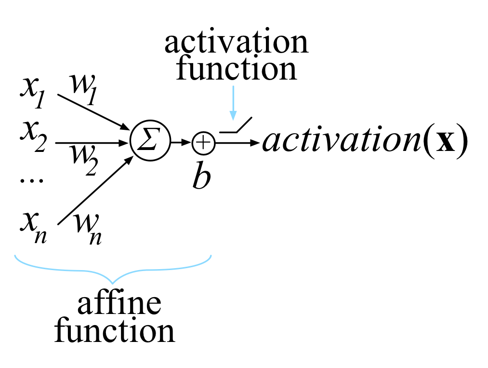

Terence Parr 与 Jeremy Howard
（Terence 是 Google 的技术负责人，曾在旧金山大学数据科学硕士项目担任计算机科学与数据科学教授。你可能知道，Terence 是 ANTLR 解析器生成器的创建者。如需更多资料，可以查看 Jeremy 的fast.ai 课程，以及旧金山大学 Data Institute 的深度学习线下课程。）
如有意见、建议或需要更正之处，请联系 Terence。
可打印版本（本 HTML 由标记文本通过 bookish 生成）。另有一个中文版本（我们尚未核实其内容）。
摘要
本文尝试讲清楚理解深度神经网络训练所需的全部矩阵微积分知识。我们假定你只具备微积分入门课程所教授的数学知识，并在需要时提供链接，帮助你复习相关内容。请注意，在开始学习如何实际训练和使用深度学习模型之前，你不需要先掌握本文内容；本文面向已经熟悉神经网络基础、希望进一步理解其背后数学原理的读者。如果读到某处遇到困难，不必担心：回去重读上一节，并试着写出一些例子，亲自完成计算。如果仍有疑问，我们很乐意在 forums.fast.ai 的 Theory 分区回答。注意：文章末尾有一个速查部分，汇总了本文讨论的所有重要矩阵微积分规则和术语。
引言
对我们大多数人来说，上一次接触微积分还是在学校里，但导数是机器学习的重要组成部分，尤其是通过优化损失函数来训练的深度神经网络。打开一篇机器学习论文，或者 PyTorch 等库的文档，你就会再次遇到微积分。而且，出现的不只是普通的标量微积分：你需要的是将线性代数与多元微积分结合起来的矩阵微分。
也许“需要”并不十分准确。Jeremy 的课程表明，借助现代深度学习库内置的自动微分，只需少量标量微积分知识，就能成为世界一流的深度学习实践者。但如果你确实想理解这些库的内部工作原理，并读懂讨论模型训练技术最新进展的学术论文，就需要掌握矩阵微积分中的部分知识。
例如，神经网络中单个计算单元的激活值，通常先通过边权重向量 $\mathbf{w}$ 与输入向量 $\mathbf{x}$ 的点积（线性代数中的运算），再加上一个标量偏置（阈值）来计算：$z(\mathbf{x}) = \sum_i^n w_i x_i + b = \mathbf{w} \cdot \mathbf{x} + b$。函数 $z(\mathbf{x})$ 称为该单元的仿射函数，之后再应用一个整流线性单元，将负值截断为零：$max(0, z(\mathbf{x}))$。这样的计算单元有时也称为“人工神经元”，其结构如下：

神经网络由许多这样的单元组成，它们被组织成多个神经元集合，称为层。一层中各单元的激活值成为下一层各单元的输入。最后一层中一个或多个单元的激活值称为网络输出。
训练这个神经元，就是选择权重 $\mathbf{w}$ 和偏置 $b$，使我们对全部 $N$ 个输入 $\mathbf{x}$ 都能得到期望的输出。为此，我们最小化一个损失函数：它针对所有输入向量 $\mathbf{x}$，比较网络最终的 $activation({\mathbf{x}})$ 与 $target(\mathbf{x})$（$\mathbf{x}$ 对应的期望输出）。为了最小化损失，我们使用某种梯度下降方法，例如普通的随机梯度下降（SGD）、带动量的 SGD，或 Adam。这些方法都需要 $activation({\mathbf{x}})$ 关于模型参数 $\mathbf{w}$ 和 $b$ 的偏导数（梯度）。我们的目标是逐步调整 $\mathbf{w}$ 和 $b$，使所有输入 $\mathbf{x}$ 上的总损失持续减小。
如果足够仔细，我们可以对一种常见损失函数（均方误差）的标量形式求导，从而推导出梯度：
$$
\frac{1}{N} \sum_{\mathbf{x}} (target(\mathbf{x}) - activation(\mathbf{x}))^2 = \frac{1}{N} \sum_{\mathbf{x}} (target(\mathbf{x}) - max(0, \sum_i^{|x|} w_i x_i + b))^2
$$
但这只是一个神经元，而神经网络必须同时训练所有层中所有神经元的权重和偏置。由于存在多个输入，也可能存在多个网络输出，我们需要函数关于向量求导的一般规则，甚至需要向量值函数关于向量求导的规则。
本文将逐步推导一些关于向量求偏导的重要规则，尤其是对训练神经网络有用的规则。这个领域称为矩阵微积分。好消息是，我们只需要其中很小的一部分，本文将介绍这些内容。虽然网上有很多多元微积分和线性代数的资料，但这两者通常作为两门独立的本科课程教授，因此大多数资料也是分别讨论的。真正讨论矩阵微积分的页面，往往只是列出规则而很少解释，或者只介绍一部分内容。由于符号密集、对基础概念的讨论又很少，除了少数数学专业读者，这些资料通常很难理解。（请参阅文末附有说明的资源列表。）
因此，我们将重新推导并逐步得出一些关键的矩阵微积分规则，以解释这些规则。矩阵微积分其实没有那么难：需要学习的并不是几十条新规则，而是几个关键概念。我们希望这篇短文能帮助你快速入门与神经网络训练有关的矩阵微积分。我们假定你已经熟悉神经网络结构与训练的基础。如果还不熟悉，请先学习 Jeremy 的课程并完成第一部分，再回来阅读本文。（请注意，与许多更偏学术的学习方式不同，我们强烈建议先在实践中学习训练和使用神经网络，再研究背后的数学。有了实际背景，数学会容易理解得多；而且，要成为有效的实践者，也不必先彻底掌握这里的全部微积分。）
关于符号的说明：Jeremy 的课程完全使用代码而非数学符号来解释概念，因为代码中不熟悉的函数很容易搜索和实验。本文则相反：我们使用大量数学符号，因为本文的目标之一，就是帮助你理解深度学习论文和书籍中出现的记号。在文章末尾，你会看到一份简短的符号表，其中也列出了可用于搜索更多信息的词或短语。
复习：标量求导规则
希望你还记得以下一些主要的标量求导规则。如果记忆有些模糊，可以看看 Khan Academy 关于标量求导规则的视频。
此外还有三角函数、指数函数等的求导规则，可以在 Khan Academy 的微分课程中找到。
当函数只有一个参数时，例如 $f(x)$ 时，你经常会看到用 $f'$ 和 $f'(x)$ 作为 $\frac{d}{dx}f(x)$ 的简写。我们不推荐这种记法，因为它没有明确指出求导所针对的变量。
可以将 $\frac{d}{dx}$ 看作一个运算符，它把一个单参数函数映射成另一个函数。也就是说，$\frac{d}{dx} f(x)$ 将 $f(x)$ 映射为它关于 $x$ 的导数，这与 $\frac{df(x)}{dx}$ 相同。此外，如果 $y = f(x)$，那么 $\frac{dy}{dx} = \frac{df(x)}{dx} = \frac{d}{dx}f(x)$。将求导看成运算符，有助于简化复杂导数，因为它满足分配性质，并允许我们提出常数。例如在下式中，我们可以提出常数 9，再将求导运算分别应用于括号内的各项。
$$
\frac{d}{dx} 9(x + x^2) = 9 \frac{d}{dx}(x + x^2) = 9 (\frac{d}{dx}x + \frac{d}{dx}x^2) = 9(1 + 2x) = 9 + 18x
$$
这个过程把对 $9(x + x^2)$ 求导，化简为一些算术运算以及对 $x$ 和 $x^2$ 求导；后两者比原来的求导问题容易得多。
向量微积分与偏导数入门
神经网络层并不是只有一个参数的单个函数 $f(x)$。因此，我们继续考虑 $f(x,y)$ 这样的多参数函数。例如，$xy$（即 $x$ 与 $y$ 的乘积）的导数是什么？换句话说，改变变量时，乘积 $xy$ 会如何变化？这取决于改变的是 $x$ 还是 $y$。每次只对一个变量（参数）求导，就会为这个双参数函数得到两个不同的偏导数：一个针对 $x$，另一个针对 $y$。偏导数不使用运算符 $\frac{d}{dx}$，而使用 $\frac{\partial}{\partial x}$（这是变体的 $d$，不是希腊字母 $\delta$）。因此，$\frac{\partial }{\partial x}xy$ 和 $\frac{\partial }{\partial y}xy$ 是 $xy$ 的偏导数，英文中也常简称为 partials。对于足够光滑的单参数函数，运算符 $\frac{\partial}{\partial x}$ 与 $\frac{d}{dx}$ 等价。不过，使用 $\frac{d}{dx}$ 更好，因为它明确表示你指的是标量导数。
关于 $x$ 的偏导数就是通常的标量导数，只是把等式中的其他变量全部视为常数。考虑函数 $f(x,y) = 3x^2y$。它关于 $x$ 的偏导写成 $\frac{\partial}{\partial x} 3x^2y$。从 $\frac{\partial}{\partial x}$ 的角度来看，存在三个常数：3、2 和 $y$。因此，$\frac{\partial}{\partial x} 3yx^2 = 3y\frac{\partial}{\partial x} x^2 = 3y2x = 6yx$。关于 $y$ 的偏导则将 $x$ 视为常数：$\frac{\partial}{\partial y} 3x^2y = 3x^2\frac{\partial}{\partial y} y = 3x^2\frac{\partial y}{\partial y} = 3x^2 \times 1 = 3x^2$。最好先亲自推导这些结果再继续阅读，否则后面的内容将难以理解。如需帮助，可以观看 Khan Academy 关于偏导数的视频。
为了明确我们正在讨论向量微积分，而不只是多元微积分，来看看如何处理针对 $f(x,y) = 3x^2y$ 算出的偏导数 $\frac{\partial f(x,y)}{\partial x}$ 和 $\frac{\partial f(x,y)}{\partial y}$（也就是 $\frac{\partial}{\partial x}f(x,y)$ 和 $\frac{\partial }{\partial y}f(x,y)$）。与其让它们分散存在，不如将它们组织成一个水平向量。这个向量称为 $f(x,y)$ 的梯度，写成：
$$
\nabla f(x,y) = [ \frac{\partial f(x,y)}{\partial x}, \frac{\partial f(x,y)}{\partial y}] = [6yx, 3x^2]
$$
因此，$f(x,y)$ 的梯度就是由它的偏导数组成的向量。梯度属于向量微积分的内容，这里处理的是将 $n$ 个标量参数映射到一个标量的函数。接下来，我们进一步考虑同时对多个函数求导。
矩阵微积分
从对一个函数求导扩展到对多个函数求导，就从向量微积分进入了矩阵微积分。我们来计算两个函数的偏导数，每个函数都有两个参数。保留上一节的 $f(x,y) = 3x^2y$，再引入 $g(x,y) = 2x + y^8$。$g$ 的梯度有两个分量，每个参数对应一个偏导数：
$$
\frac{\partial g(x,y)}{\partial x} = \frac{\partial 2x}{\partial x} + \frac{\partial y^8}{\partial x} = 2\frac{\partial x}{\partial x} + 0 = 2 \times 1 = 2
$$
以及
$$
\frac{\partial g(x,y)}{\partial y} = \frac{\partial 2x}{\partial y} + \frac{\partial y^8}{\partial y} = 0 + 8y^7 = 8y^7
$$
因而得到梯度 $\nabla g(x,y) = [2, 8y^7]$。
梯度向量组织了某个标量函数的全部偏导数。如果有两个函数，也可以将它们的梯度逐行排列成一个矩阵。这样得到的就是 Jacobian 矩阵（简称 Jacobian），其中每一行都是一个梯度：
$$
J =
\begin{bmatrix}
\nabla f(x,y)\\
\nabla g(x,y)
\end{bmatrix} = \begin{bmatrix}
\frac{\partial f(x,y)}{\partial x} & \frac{\partial f(x,y)}{\partial y}\\
\frac{\partial g(x,y)}{\partial x} & \frac{\partial g(x,y)}{\partial y}\\
\end{bmatrix} = \begin{bmatrix}
6yx & 3x^2\\
2 & 8y^7
\end{bmatrix}
$$
这就进入了矩阵微积分！
请注意，Jacobian 有多种表示方式。我们使用的是所谓的 numerator layout，但很多论文和软件使用 denominator layout。后者就是 numerator layout 下 Jacobian 的转置（沿对角线翻转）：
$$
\begin{bmatrix}
6yx & 2\\
3x^2 & 8y^7
\end{bmatrix}
$$
Jacobian 的一般形式
到目前为止，我们只看了一个具体的 Jacobian 矩阵例子。为了给出更一般的定义，将多个参数合并为一个向量参数：$f(x,y,z) \Rightarrow f(\mathbf{x})$。（文献中有时也用 $\overrightarrow{\mathbf x}$ 表示向量。）$\mathbf{x}$ 这样的粗体小写字母表示向量，$x$ 这样的斜体小写字母表示标量。$x_{i}$ 是向量 $\mathbf{x}$ 的第 $i^{th}$ 个元素，使用斜体是因为单个向量元素是标量。我们还必须规定向量 $\mathbf{x}$ 的方向。默认所有向量都是大小为 $n \times 1$ 的竖直向量：
$$
\mathbf{x} = \begin{bmatrix}
x_1\\
x_2\\
\vdots \\
x_n\\
\end{bmatrix}
$$
对于多个标量值函数，也可以像组织参数一样，把它们合并成一个向量。设 $\mathbf{y} = \mathbf{f}(\mathbf{x})$ 是由 $m$ 个标量值函数组成的向量，每个函数都接收长度为 $n=|\mathbf{x}|$ 的向量 $\mathbf{x}$；其中 $|\mathbf{x}|$ 表示 $\mathbf{x}$ 中元素的基数，也就是个数。与上一节一样，$\mathbf{f}$ 中的每个函数 $f_{i}$ 都返回一个标量：
$$
\begin{array}{lcl}
y_1 & = & f_1(\mathbf{x})\\
y_2 & = & f_2(\mathbf{x})\\
& \vdots & \\
y_m & = & f_m(\mathbf{x})\\
\end{array}
$$
例如，上一节的 $f(x,y) = 3x^2y$ 和 $g(x,y) = 2x + y^8$ 可以表示为：
$$
\begin{array}{lllllllll}
y_1 = f_1(\mathbf{x}) = 3x_1^2x_2 &&&(\text{substituting }x_1 \text{ for }x, x_2 \text{ for }y)\\
y_2 = f_2(\mathbf{x}) = 2x_1 + x_2^8
\end{array}
$$
很多情况下有 $m=n$，因为 $\mathbf{x}$ 向量中的每个元素都对应一个标量函数结果。例如，考虑恒等函数 $\mathbf{y} = \mathbf{f(x)} = \mathbf{x}$：
$$
\begin{array}{lclcc}
y_1 & = & f_1(\mathbf{x})& = & x_1\\
y_2 & = & f_2(\mathbf{x})& = & x_2\\
& \vdots & \\
y_n & = & f_n(\mathbf{x})& = & x_n\\
\end{array}
$$
这个例子中，我们有 $m=n$ 个函数和参数。但在一般情况下，Jacobian 矩阵是全部 $m \times n$ 个可能偏导数的集合（$m$ 行、$n$ 列），也就是将 $m$ 个关于 $\mathbf{x}$ 的梯度逐行排列起来：
$$
\frac{\partial \mathbf{y}}{\partial \mathbf{x}} = \begin{bmatrix}
\nabla f_1(\mathbf{x}) \\
\nabla f_2(\mathbf{x})\\
\ldots\\
\nabla f_m(\mathbf{x})
\end{bmatrix} = \begin{bmatrix}
\frac{\partial}{\partial \mathbf{x}} f_1(\mathbf{x}) \\
\frac{\partial}{\partial \mathbf{x}} f_2(\mathbf{x})\\
\ldots\\
\frac{\partial}{\partial \mathbf{x}} f_m(\mathbf{x})
\end{bmatrix} = \begin{bmatrix}
\frac{\partial}{\partial {x_1}} f_1(\mathbf{x})~ \frac{\partial}{\partial {x_2}} f_1(\mathbf{x}) ~\ldots~ \frac{\partial}{\partial {x_n}} f_1(\mathbf{x}) \\
\frac{\partial}{\partial {x_1}} f_2(\mathbf{x})~ \frac{\partial}{\partial {x_2}} f_2(\mathbf{x}) ~\ldots~ \frac{\partial}{\partial {x_n}} f_2(\mathbf{x}) \\
\ldots\\
~\frac{\partial}{\partial {x_1}} f_m(\mathbf{x})~ \frac{\partial}{\partial {x_2}} f_m(\mathbf{x}) ~\ldots~ \frac{\partial}{\partial {x_n}} f_m(\mathbf{x}) \\
\end{bmatrix}
$$
每个 $\frac{\partial}{\partial \mathbf{x}} f_i(\mathbf{x})$ 都是水平的 $n$ 维向量，因为偏导针对的是长度为 $n = |\mathbf{x}|$ 的向量 $\mathbf{x}$。如果对 $\mathbf{x}$ 求偏导，Jacobian 的宽度就是 $n$，因为可以改变的参数有 $n$ 个，每个参数都可能改变函数值。因此，对于 $m$ 个方程，Jacobian 总是有 $m$ 行。用图示观察 Jacobian 可能具有的形状，有助于理解：
| scalar $x$ | vector $\mathbf{x}$ |
scalar $f$ | $\frac{\partial f}{\partial x}$ | $\frac{\partial f}{\partial\mathbf{x}}$ |
vector $\mathbf{f}$ | $\frac{\partial\mathbf{f}}{\partial x}$ | $\frac{\partial\mathbf{f}}{\partial\mathbf{x}}$ |
对于恒等函数 $\mathbf{f(x)} = \mathbf{x}$，其中 $f_i(\mathbf{x}) = x_i$，它有 $n$ 个函数，每个函数都有 $n$ 个参数，这些参数存放在一个向量 $\mathbf{x}$ 中。因此，由于 $m=n$，它的 Jacobian 是一个方阵：
$$
\begin{eqnarray*}
\frac{\partial \mathbf{y}}{\partial \mathbf{x}} = \begin{bmatrix}
\frac{\partial}{\partial \mathbf{x}} f_1(\mathbf{x}) \\
\frac{\partial}{\partial \mathbf{x}} f_2(\mathbf{x})\\
\ldots\\
\frac{\partial}{\partial \mathbf{x}} f_m(\mathbf{x})
\end{bmatrix} &=& \begin{bmatrix}
\frac{\partial}{\partial {x_1}} f_1(\mathbf{x})~ \frac{\partial}{\partial {x_2}} f_1(\mathbf{x}) ~\ldots~ \frac{\partial}{\partial {x_n}} f_1(\mathbf{x}) \\
\frac{\partial}{\partial {x_1}} f_2(\mathbf{x})~ \frac{\partial}{\partial {x_2}} f_2(\mathbf{x}) ~\ldots~ \frac{\partial}{\partial {x_n}} f_2(\mathbf{x}) \\
\ldots\\
~\frac{\partial}{\partial {x_1}} f_m(\mathbf{x})~ \frac{\partial}{\partial {x_2}} f_m(\mathbf{x}) ~\ldots~ \frac{\partial}{\partial {x_n}} f_m(\mathbf{x}) \\
\end{bmatrix}\\\\
& = & \begin{bmatrix}
\frac{\partial}{\partial {x_1}} x_1~ \frac{\partial}{\partial {x_2}} x_1 ~\ldots~ \frac{\partial}{\partial {x_n}} x_1 \\
\frac{\partial}{\partial {x_1}} x_2~ \frac{\partial}{\partial {x_2}} x_2 ~\ldots~ \frac{\partial}{\partial {x_n}} x_2 \\
\ldots\\
~\frac{\partial}{\partial {x_1}} x_n~ \frac{\partial}{\partial {x_2}} x_n ~\ldots~ \frac{\partial}{\partial {x_n}} x_n \\
\end{bmatrix}\\\\
& & (\text{and since } \frac{\partial}{\partial {x_j}} x_i = 0 \text{ for } j \neq i)\\
& = & \begin{bmatrix}
\frac{\partial}{\partial {x_1}} x_1 & 0 & \ldots& 0 \\
0 & \frac{\partial}{\partial {x_2}} x_2 &\ldots & 0 \\
& & \ddots\\
0 & 0 &\ldots& \frac{\partial}{\partial {x_n}} x_n \\
\end{bmatrix}\\\\
& = & \begin{bmatrix}
1 & 0 & \ldots& 0 \\
0 &1 &\ldots & 0 \\
& & \ddots\\
0 & 0 & \ldots &1 \\
\end{bmatrix}\\\\
& = & I ~~~(I \text{ is the identity matrix with ones down the diagonal})\\
\end{eqnarray*}
$$
继续阅读之前，请确认自己能推导出上面的每一步。如果遇到困难，就分别考虑矩阵中的每个元素，并应用通常的标量求导规则。这是一种普遍有用的方法：将向量表达式展开成一组标量表达式，求出所有偏导数，最后再按正确的方式组合成向量和矩阵。
还要注意矩阵的方向：是竖直的 $\mathbf{x}$，还是水平的 $\mathbf{x}^T$；其中 $\mathbf{x}^T$ 表示 $\mathbf{x}$ 的转置。同时也要分清一个表达式是标量值函数 $y = ...\,$，还是函数组成的向量（或向量值函数）$\mathbf{y} = ...\,$。
向量element-wise二元运算的导数
向量的element-wise二元运算，例如向量加法 $\mathbf{w} + \mathbf{x}$，非常重要，因为许多常见向量运算，例如向量乘以标量，都可以表示成element-wise二元运算。“element-wise二元运算”就是对两个向量的第一个元素应用某个运算符，得到输出的第一个元素；再对两个输入的第二个元素执行该运算，得到输出的第二个元素，依此类推。例如，numpy 或 tensorflow 默认就以这种方式应用各种基本数学运算符。深度学习中经常出现的例子包括 $max(\mathbf{w},\mathbf{x})$ 和 $\mathbf{w} > \mathbf{x}$（返回由 1 和 0 组成的向量）。
可以用记号 $\mathbf{y} = \mathbf{f(w)} \bigcirc \mathbf{g(x)}$ 概括element-wise二元运算，其中 $m=n=|y|=|w|=|x|$。（提醒一下：$|x|$ 是 $x$ 中的元素个数。）符号 $\bigcirc$ 表示任意element-wise运算符，例如 $+$，而不是函数复合运算符 $\circ$。将方程 $\mathbf{y} = \mathbf{f(w)} \bigcirc \mathbf{g(x)}$ 展开为标量方程后，形式如下：
$$
\begin{bmatrix}
y_1\\
y_2\\
\vdots \\
y_n\\
\end{bmatrix} = \begin{bmatrix}
f_{1}(\mathbf{w}) \bigcirc g_{1}(\mathbf{x})\\
f_{2}(\mathbf{w}) \bigcirc g_{2}(\mathbf{x})\\
\vdots \\
f_{n}(\mathbf{w}) \bigcirc g_{n}(\mathbf{x})\\
\end{bmatrix}
$$
这里将 $n$ 个方程（不是 $m$ 个）竖直排列，是为了强调element-wise运算的结果是大小为 $m=n$ 的向量。
运用上一节的思路可知，关于 $\mathbf{w}$ 的 Jacobian 在一般情况下是如下方阵：
$$
J_\mathbf{w} =
\frac{\partial \mathbf{y}}{\partial \mathbf{w}} = \begin{bmatrix}
\frac{\partial}{\partial w_1} ( f_{1}(\mathbf{w}) \bigcirc g_{1}(\mathbf{x}) ) & \frac{\partial}{\partial w_2} ( f_{1}(\mathbf{w}) \bigcirc g_{1}(\mathbf{x}) ) & \ldots & \frac{\partial}{\partial w_n} ( f_{1}(\mathbf{w}) \bigcirc g_{1}(\mathbf{x}) )\\
\frac{\partial}{\partial w_1} ( f_{2}(\mathbf{w}) \bigcirc g_{2}(\mathbf{x}) ) & \frac{\partial}{\partial w_2} ( f_{2}(\mathbf{w}) \bigcirc g_{2}(\mathbf{x}) ) & \ldots & \frac{\partial}{\partial w_n} ( f_{2}(\mathbf{w}) \bigcirc g_{2}(\mathbf{x}) )\\
& \ldots\\
\frac{\partial}{\partial w_1} ( f_{n}(\mathbf{w}) \bigcirc g_{n}(\mathbf{x}) ) & \frac{\partial}{\partial w_2} ( f_{n}(\mathbf{w}) \bigcirc g_{n}(\mathbf{x}) ) & \ldots & \frac{\partial}{\partial w_n} ( f_{n}(\mathbf{w}) \bigcirc g_{n}(\mathbf{x}) )\\
\end{bmatrix}
$$
而关于 $\mathbf{x}$ 的 Jacobian 为：
$$
J_\mathbf{x} =
\frac{\partial \mathbf{y}}{\partial \mathbf{x}} = \begin{bmatrix}
\frac{\partial}{\partial x_1} ( f_{1}(\mathbf{w}) \bigcirc g_{1}(\mathbf{x}) ) & \frac{\partial}{\partial x_2} ( f_{1}(\mathbf{w}) \bigcirc g_{1}(\mathbf{x}) ) & \ldots & \frac{\partial}{\partial x_n} ( f_{1}(\mathbf{w}) \bigcirc g_{1}(\mathbf{x}) )\\
\frac{\partial}{\partial x_1} ( f_{2}(\mathbf{w}) \bigcirc g_{2}(\mathbf{x}) ) & \frac{\partial}{\partial x_2} ( f_{2}(\mathbf{w}) \bigcirc g_{2}(\mathbf{x}) ) & \ldots & \frac{\partial}{\partial x_n} ( f_{2}(\mathbf{w}) \bigcirc g_{2}(\mathbf{x}) )\\
& \ldots\\
\frac{\partial}{\partial x_1} ( f_{n}(\mathbf{w}) \bigcirc g_{n}(\mathbf{x}) ) & \frac{\partial}{\partial x_2} ( f_{n}(\mathbf{w}) \bigcirc g_{n}(\mathbf{x}) ) & \ldots & \frac{\partial}{\partial x_n} ( f_{n}(\mathbf{w}) \bigcirc g_{n}(\mathbf{x}) )\\
\end{bmatrix}
$$
这个表达式相当复杂，但幸运的是，Jacobian 经常是对角矩阵，即除了对角线以外，所有位置都为零的矩阵。由于这会大大简化 Jacobian，我们来详细看看，element-wise运算的 Jacobian 在什么情况下会化简为对角矩阵。
在对角 Jacobian 中，所有非对角元素都为零，即 $\frac{\partial}{\partial w_j} ( f_i(\mathbf{w}) \bigcirc g_i(\mathbf{x}) ) = 0$，其中 $j \neq i$。（注意，我们是在对 $w_{j}$ 而不是 $w_{i}$ 求偏导。）这些非对角元素在什么条件下为零？恰好是在 $f_{i}$ 和 $g_{i}$ 关于 $w_{j}$ 为常数，即 $\frac{\partial}{\partial w_j} f_i(\mathbf{w}) = \frac{\partial}{\partial w_j} g_i(\mathbf{x}) = 0$ 时。不论使用哪个运算符，只要这些偏导数为零，相应的求导结果就为零；无论如何都有 $0 \bigcirc 0 = 0$，而常数的偏导数为零。
当 $f_{i}$ 和 $g_{i}$ 不是 $w_{j}$ 的函数时，这些偏导数就为零。我们知道，element-wise运算意味着 $f_{i}$ 只是 $w_{i}$ 的函数，而 $g_{i}$ 只是 $x_{i}$ 的函数。例如，$\mathbf{w}+\mathbf{x}$ 计算的是 $w_i + x_i$ 的和。因此，$f_i(\mathbf{w}) \bigcirc g_i(\mathbf{x})$ 简化为 $f_i(w_i) \bigcirc g_i(x_i)$，我们的目标就变成 $\frac{\partial}{\partial w_j} f_i(w_i) = \frac{\partial}{\partial w_j} g_i(x_i) = 0$。当 $j \neq i$ 时，对于关于 $w_{j}$ 的偏导运算符而言，$f_i(w_i)$ 和 $g_i(x_i)$ 都是常数，所以非对角位置的偏导数为零。（严格来说，$f_i(w_i)$ 的写法不完全符合此前的记号约定，因为 $f_{i}$ 和 $g_{i}$ 是向量的函数，而不是单个元素的函数。我们本应写成类似 $\hat f_{i}(w_i) = f_{i}(\mathbf{w})$ 的形式，但这会使公式更加复杂，而程序员通常习惯于函数重载，因此这里仍沿用这一记法。）
后面会利用这一简化。我们把 $f_i(\mathbf{w})$ 和 $g_i(\mathbf{x})$ 分别最多只访问 $w_{i}$ 和 $x_{i}$ 的限制，称为element-wise对角条件。
在这一条件下，Jacobian 对角线上的元素为 $\frac{\partial}{\partial w_i} ( f_i(w_i) \bigcirc g_i(x_i) )$：
$$
\frac{\partial \mathbf{y}}{\partial \mathbf{w}} = \begin{bmatrix}
\frac{\partial}{\partial w_1} ( f_{1}(w_1) \bigcirc g_{1}(x_1) )\\
& \frac{\partial}{\partial w_2} (f_{2}(w_2) \bigcirc g_{2}(x_2) ) & & {\huge 0}\\
& & \ldots \\
{\huge 0}& & & \frac{\partial}{\partial w_n} (f_{n}(w_n) \bigcirc g_{n}(x_n) )
\end{bmatrix}
$$
（较大的“0”表示所有非对角元素均为 0。）
更简洁地，可以写成：
$$
\frac{\partial \mathbf{y}}{\partial \mathbf{w}} = diag \left( \frac{\partial}{\partial w_1}(f_{1}(w_1) \bigcirc g_{1}(x_1)),~ \frac{\partial}{\partial w_2}(f_{2}(w_2) \bigcirc g_{2}(x_2)),~ \ldots,~ \frac{\partial}{\partial w_n}(f_{n}(w_n) \bigcirc g_{n}(x_n)) \right)
$$
以及
$$
\frac{\partial \mathbf{y}}{\partial \mathbf{x}} = diag \left( \frac{\partial}{\partial x_1}(f_{1}(w_1) \bigcirc g_{1}(x_1)),~ \frac{\partial}{\partial x_2}(f_{2}(w_2) \bigcirc g_{2}(x_2)),~ \ldots,~ \frac{\partial}{\partial x_n}(f_{n}(w_n) \bigcirc g_{n}(x_n)) \right)
$$
其中，$diag(\mathbf{x})$ 构造一个矩阵，其对角元素取自向量 $\mathbf{x}$。
由于我们经常进行简单的向量算术，element-wise二元运算中的一般函数 $\mathbf{f(w)}$，往往就是向量 $\mathbf{w}$ 本身。只要这个一般函数就是一个向量，$f_i(\mathbf{w})$ 就会简化为 $f_i(w_i) = w_i$。例如，向量加法 $\mathbf{w + x}$ 满足element-wise对角条件，因为 $\mathbf{f(w)} + \mathbf{g(x)}$ 对应的标量方程 $y_i = f_i(\mathbf{w}) + g_i(\mathbf{x})$ 可以简化为 $y_i = f_i(w_i) + g_i(x_i) = w_i + x_i$，其偏导数为：
$$
\frac{\partial}{\partial w_i} ( f_{i}(w_i) + g_{i}(x_i) ) = \frac{\partial}{\partial w_i}(w_i + x_i) = 1 + 0 = 1
$$
$$
\frac{\partial}{\partial x_i} ( f_{i}(w_i) + g_{i}(x_i) ) = \frac{\partial}{\partial x_i}(w_i + x_i) = 0 + 1 = 1
$$
这就得到单位矩阵 $\frac{\partial (\mathbf{w+x})}{\partial \mathbf{w}} = \frac{\partial (\mathbf{w+x})}{\partial \mathbf{x}} = I$，因为对角线上的每个元素都是 1。$I$ 表示适当维度的方形单位矩阵，除了全为 1 的对角线以外，其他位置均为零。
在 $f_i(\mathbf{w})$ 简化为 $f_i(w_i)$ 这一简单的特殊情况下，你应该已经能够推导出常见向量element-wise二元运算的 Jacobian：
$$
\begin{array}{lllllllll}
\textbf{Op} & & {\textbf{Partial with respect to }} \mathbf{w} \\
+ & & \frac{\partial (\mathbf{w+x})}{\partial \mathbf{w}} = diag(\ldots \frac{\partial (w_i + x_i)}{\partial w_i} \ldots) = diag(\overrightarrow{\mathbf 1}) = I \\\\
- & & \frac{\partial (\mathbf{w-x})}{\partial \mathbf{w}} = diag(\ldots\frac{\partial (w_i - x_i)}{\partial w_i}\ldots) = diag(\overrightarrow{\mathbf 1}) = I \\\\
\otimes & & \frac{\partial (\mathbf{w \otimes x})}{\partial \mathbf{w}} = diag(\ldots\frac{\partial (w_i \times x_i)}{\partial w_i} \ldots) = diag(\mathbf{x}) \\\\
\oslash & & \frac{\partial (\mathbf{w \oslash x})}{\partial \mathbf{w}} = diag(\ldots\frac{\partial (w_i / x_i)}{\partial w_i}\ldots) = diag(\ldots \frac{1}{x_i} \ldots) \\\\
\end{array}
$$
$$
\begin{array}{lllllllll}
\textbf{Op} & & {\textbf{Partial with respect to }}\mathbf{x}\\
+ & & \frac{\partial (\mathbf{w+x})}{\partial \mathbf{x}} = I\\\\
- & & \frac{\partial (\mathbf{w-x})}{\partial \mathbf{x}} = diag(\ldots\frac{\partial (w_i - x_i)}{\partial x_i}\ldots) = diag(-\overrightarrow{\mathbf 1}) = -I \\\\
\otimes & & \frac{\partial (\mathbf{w \otimes x})}{\partial \mathbf{x}} = diag(\mathbf{w})\\\\
\oslash & & \frac{\partial (\mathbf{w \oslash x})}{\partial \mathbf{x}} = diag(\ldots \frac{-w_i}{x_i^2} \ldots)\\
\end{array}
$$
运算符 $\otimes$ 和 $\oslash$ 分别表示element-wise乘法和除法；$\otimes$ 有时称为 Hadamard product。element-wise乘除没有统一的标准记号，因此这里采用与一般二元运算记号一致的写法。
涉及标量扩展的导数
将标量与向量相乘或相加时，我们实际上隐式地把标量扩展为一个向量，然后执行element-wise二元运算。例如，把标量 $z$ 加到向量 $\mathbf{x}$ 上，即 $\mathbf{y} = \mathbf{x} + z$，实际上是 $\mathbf{y} = \mathbf{f(x)} + \mathbf{g}(z)$，其中 $\mathbf{f(x)} = \mathbf{x}$，且 $\mathbf{g}(z) = \overrightarrow{\mathbf 1} z$。（记号 $\overrightarrow{\mathbf 1}$ 表示适当长度的全 1 向量。）$z$ 可以是任何不依赖 $\mathbf{x}$ 的标量，这很有用，因为对任意 $x_{i}$ 都有 $\frac{\partial z}{\partial x_i} = 0$，能够简化偏导数计算。（在这里的讨论中，可以把变量 $z$ 看成常数。）类似地，标量乘法 $\mathbf{y} = \mathbf{x} z$ 实际上是 $\mathbf{y} = \mathbf{f(x)} \otimes \mathbf{g}(z) = \mathbf{x} \otimes \overrightarrow{\mathbf 1}z$，其中 $\otimes$ 表示两个向量的element-wise乘积，即 Hadamard product。
对于向量与标量的加法和乘法，关于向量 $\mathbf{x}$ 的偏导数可以使用element-wise规则：
$$
\frac{\partial \mathbf{y}}{\partial \mathbf{x}} = diag \left( \ldots \frac{\partial}{\partial x_i} ( f_i(x_i) \bigcirc g_i(z) ) \ldots \right)
$$
这是因为函数 $\mathbf{f(x)} = \mathbf{x}$ 和 $\mathbf{g}(z) = \overrightarrow{\mathbf 1} z$ 显然满足 Jacobian 的element-wise对角条件：$f_i(\mathbf{x})$ 最多只引用 $x_{i}$，而 $g_i(z)$ 引用的是向量 $\overrightarrow{\mathbf 1}z$ 中的第 $i^{th}$ 个元素。
使用通常的标量偏导规则，可以得到向量与标量相加时 Jacobian 的如下对角元素：
$$
\frac{\partial}{\partial x_i} ( f_i(x_i) + g_i(z) ) = \frac{\partial (x_i + z)}{\partial x_i} = \frac{\partial x_i}{\partial x_i} + \frac{\partial z}{\partial x_i} = 1 + 0 = 1
$$
所以，$\frac{\partial}{\partial \mathbf{x}} ( \mathbf{x} + z ) = diag(\overrightarrow{\mathbf 1}) = I$。
不过，对标量参数 $z$ 求偏导，得到的是竖直向量，而不是对角矩阵。向量中的元素为：
$$
\frac{\partial}{\partial z} ( f_i(x_i) + g_i(z) ) = \frac{\partial (x_i + z)}{\partial z} = \frac{\partial x_i}{\partial z} + \frac{\partial z}{\partial z} = 0 + 1 = 1
$$
因此，$\frac{\partial}{\partial z} ( \mathbf{x} + z ) = \overrightarrow{\mathbf 1}$。
向量与标量相乘时，Jacobian 的对角元素需要用到标量求导的乘积法则：
$$
\frac{\partial}{\partial x_i} ( f_i(x_i) \otimes g_i(z) ) = x_i \frac{\partial z}{\partial x_i} + z \frac{\partial x_i}{\partial x_i} = 0 + z = z
$$
所以，$\frac{\partial}{\partial \mathbf{x}} ( \mathbf{x} z ) = diag(\overrightarrow{\mathbf 1} z) = I z$。
关于标量参数 $z$ 的偏导数是一个竖直向量，其元素为：
$$
\frac{\partial}{\partial z} ( f_i(x_i) \otimes g_i(z) ) = x_i \frac{\partial z}{\partial z} + z \frac{\partial x_i}{\partial z} = x_i + 0 = x_i
$$
由此得到 $\frac{\partial}{\partial z} ( \mathbf{x} z ) = \mathbf{x}$。
向量求和归约
对向量元素求和，是深度学习中的重要运算，例如网络损失函数就会使用它。我们也可以利用求和来简化向量点积以及其他将向量归约为标量的运算的导数计算。
设 $y = sum( \mathbf{f}(\mathbf{x})) = \sum_{i=1}^n f_i(\mathbf{x})$。注意，这里特意保留向量参数 $\mathbf{x}$，因为每个函数 $f_{i}$ 都可能使用向量中的全部值，而不只是 $x_{i}$。求和针对的是函数的结果，不是参数。向量求和的梯度（$1 \times n$ 的 Jacobian）为：
$$
\begin{array}{lcllll}
\frac{\partial y}{\partial \mathbf{x}} & = & \begin{bmatrix} \frac{\partial y}{\partial x_1}, \frac{\partial y}{\partial x_2}, \ldots, \frac{\partial y}{\partial x_n} \end{bmatrix}\\\\
& = & \begin{bmatrix} \frac{\partial}{\partial x_1} \sum_i f_i(\mathbf{x}),~ \frac{\partial}{\partial x_2} \sum_i f_i(\mathbf{x}),~ \ldots,~ \frac{\partial}{\partial x_n} \sum_i f_i(\mathbf{x}) \end{bmatrix} \\\\
& = & \begin{bmatrix} \sum_i \frac{\partial f_i(\mathbf{x})}{\partial x_1},~ \sum_i \frac{\partial f_i(\mathbf{x})}{\partial x_2},~ \ldots,~ \sum_i \frac{\partial f_i(\mathbf{x})}{\partial x_n} \end{bmatrix}&&&(\text{move derivative inside }\sum)\\
\end{array}
$$
（梯度元素内部的求和可能容易混淆，因此请确保记号前后一致。）
来看一个简单的 $y = sum(\mathbf{x})$ 的梯度。和式中的函数就是 $f_i(\mathbf{x}) = x_i$，因此梯度为：
$$
\nabla y = \begin{bmatrix} \sum_i \frac{\partial f_i(\mathbf{x})}{\partial x_1},~ \sum_i \frac{\partial f_i(\mathbf{x})}{\partial x_2},~ \ldots,~ \sum_i \frac{\partial f_i(\mathbf{x})}{\partial x_n} \end{bmatrix} = \begin{bmatrix} \sum_i \frac{\partial x_i}{\partial x_1},~ \sum_i \frac{\partial x_i}{\partial x_2},~ \ldots,~ \sum_i \frac{\partial x_i}{\partial x_n} \end{bmatrix}
$$
因为当 $j \neq i$ 时有 $\frac{\partial}{\partial x_j} x_i = 0$，所以可以简化为：
$$
\nabla y = \begin{bmatrix} \frac{\partial x_1}{\partial x_1},~ \frac{\partial x_2}{\partial x_2},~ \ldots,~ \frac{\partial x_n}{\partial x_n} \end{bmatrix} = \begin{bmatrix}1, 1, \ldots, 1\end{bmatrix} = \overrightarrow{\mathbf 1}^T
$$
注意，结果是一个全 1 的水平向量，而不是竖直向量，因此梯度为 $\overrightarrow{\mathbf 1}^T$。（$\overrightarrow{\mathbf 1}^T$ 的上标 $T$ 表示该向量的转置；这里将竖直向量变为水平向量。）务必始终分清每个向量和矩阵的形状，否则就无法计算复杂函数的导数。
再看一个例子：将向量乘以一个常数标量后，对结果求和。如果 $y = sum(\mathbf{x} z)$，那么 $f_i(\mathbf{x},z) = x_i z$。梯度为：
$$
\begin{array}{lcl}
\frac{\partial y}{\partial \mathbf{x}} & = & \begin{bmatrix} \sum_i \frac{\partial}{\partial x_1} x_i z,~ \sum_i \frac{\partial }{\partial x_2} x_i z,~ \ldots,~ \sum_i \frac{\partial}{\partial x_n} x_i z \end{bmatrix}\\\\
& = & \begin{bmatrix} \frac{\partial}{\partial x_1} x_1 z,~ \frac{\partial }{\partial x_2} x_2 z,~ \ldots,~ \frac{\partial}{\partial x_n} x_n z \end{bmatrix}\\\\
& = & \begin{bmatrix} z, z, \ldots, z \end{bmatrix}\\
\end{array}
$$
关于标量变量 $z$ 的导数为 $1 \times 1$：
$$
\begin{array}{lcl}
\frac{\partial y}{\partial z} & = & \frac{\partial}{\partial z} \sum_{i=1}^n x_i z\\\\
& = & \sum_i \frac{\partial}{\partial z} x_i z\\\\
& = & \sum_i x_i\\\\
& = & sum(\mathbf{x})\\
\end{array}
$$
链式法则
仅凭前面介绍的矩阵微积分基本规则，还无法计算非常复杂的函数的偏导数。例如，对于 $sum(\mathbf{w}+\mathbf{x})$ 这样的嵌套表达式，如果不把它展开为等价的标量形式，就无法直接求导。我们需要通过所谓的向量链式法则来组合基本向量规则。然而，多种求导规则都被称为“链式法则”，因此必须明确具体指的是哪一种。这里的目标之一，是清楚地定义并命名三种不同的链式法则，并说明它们分别适用于什么情况。首先从单变量链式法则开始：计算标量函数关于标量的导数。然后介绍一个重要概念——全导数，并用它定义一个名称较为严格的规则：单变量全导数链式法则。最后，我们就能完整地讨论神经网络所需的向量链式法则。
从概念上说，链式法则采用分治策略，将复杂表达式拆成导数更容易计算的子表达式；快速排序也采用分治策略。它的作用在于，我们可以分别处理每个简单子表达式，再将中间结果组合起来，得到正确的整体结果。
对由嵌套子表达式构成的表达式求导时，就需要链式法则。例如，遇到 $\frac{d}{dx} sin(x^2)$ 这样的表达式时，最外层要对一个中间结果取 $sin$，而这个中间结果来自对 $x$ 求平方的嵌套子表达式。具体而言，这里需要单变量链式法则，下面详细说明。
单变量链式法则
先看嵌套表达式的求导结果：$\frac{d}{dx} sin(x^2) = 2xcos(x^2)$。不需要很高的数学水平，也能看出结果中的两个组成部分来自标量求导规则：$\frac{d}{dx}x^2 = 2x$ 和 $\frac{d}{du} sin(u) = cos(u)$。看起来，只需将外层表达式的导数与内层表达式的导数相乘，而这正是正确的做法。本节将说明其中的一般原理，并给出一种适用于单变量多层嵌套表达式的处理过程。
链式法则通常通过嵌套函数定义，例如单变量情况下的 $y = f(g(x))$。（你也会看到使用函数复合 $(f \circ g)(x)$ 定义链式法则，这两种写法是一回事。）有些资料用简写 $y' = f'(g(x))g'(x)$ 表示导数，但这隐藏了引入中间变量 $u = g(x)$ 的过程，稍后我们会看到它。最好明确写出 $f(g(x))$ 的单变量链式法则，这样就不会对错误的变量求导。我们推荐以下形式：
$$
\frac{dy}{dx} = \frac{dy}{du}\frac{du}{dx}
$$
使用单变量链式法则时，按以下步骤操作：
- 对嵌套子表达式，以及二元和一元运算的子表达式，引入中间变量。例如，$\times$ 是二元运算，而 $sin(x)$ 和其他三角函数通常是一元运算，因为只有一个操作数。这一步将所有方程规范为只包含一个运算符或一次函数应用的形式。
- 计算各中间变量关于其参数的导数。
- 将所有中间变量的导数相乘，组合成整体结果。
- 如果求导结果中还引用了中间变量，就将其原表达式代回。
第三步将中间结果依次相乘，这正是“链式法则”中“链式”的含义。把中间导数相乘，是各种形式的链式法则的共同特征。
来把这一过程应用于 $y = f(g(x)) = sin(x^2)$：
- 引入中间变量。令 $u = x^2$ 表示子表达式 $x^2$（它是以下表达式的简写：$u(x) = x^2$）。由此得到：
$$
\begin{array}{lllll}
u &=& x^2 &&(\text{relative to definition }f(g(x)), g(x) = x^2)\\
y &=& sin(u) && (y = f(u) = sin(u))
\end{array}
$$
这些子表达式的排列顺序不影响答案，但我们建议按嵌套层次由内向外处理。这样，每个表达式及其导数都只依赖此前已经计算出的量。
- 计算导数。
$$
\begin{array}{lllll}
\frac{du}{dx} &=& 2x && (\text{Take derivative with respect to }x)\\
\frac{dy}{du} &=& cos(u) && (\text{Take derivative with respect to }u \text{ not }x)
\end{array}
$$
- 组合。
$$
\frac{dy}{dx} = \frac{dy}{du} \frac{du}{dx} = cos(u)2x
$$
- 代回。
$$
\frac{dy}{dx} = \frac{dy}{du} \frac{du}{dx} = cos(x^2)2x = 2xcos(x^2)
$$
可以看到，单独计算每个中间变量的导数很容易。链式法则说明这样做是合法的，并告诉我们如何组合中间结果，得到 $2xcos(x^2)$。
链式法则中组合导数的步骤，也可以从单位约分来理解。假设 $y$ 的单位是英里，$x$ 表示油箱中的加仑数，$u$ 的单位也是加仑，那么 $\frac{dy}{dx} = \frac{dy}{du} \frac{du}{dx}$ 就可以解释为 $\frac{miles}{tank} = \frac{miles}{gallon} \frac{gallon}{tank}$。分母和分子中的 $gallon$ 相互约去。
理解单变量链式法则的另一种方式，是将整个表达式画成数据流图或一系列运算；对熟悉编译器的读者来说，也就是抽象语法树：

函数参数 $x$ 的变化先经过平方运算，再经过 $sin$ 运算，最终改变结果 $y$。可以将 $\frac{du}{dx}$ 理解为“变化从 $x$ 传到 $u$”，将 $\frac{dy}{du}$ 理解为“变化从 $u$ 传到 $y$”。从 $x$ 到 $y$ 需要经过一个中间步骤。按照惯例，链式法则通常从输出变量向参数的方向书写，即 $\frac{dy}{dx} = \frac{dy}{du} \frac{du}{dx}$。但如果从 $x$ 到 $y$ 的方向理解，反过来使用等价的 $\frac{dy}{dx} = \frac{du}{dx}\frac{dy}{du}$ 会更加清楚。
单变量链式法则的适用条件。注意，从 $x$ 到根节点 $y$ 只有一条数据流路径。$x$ 的变化只能通过一种方式影响输出 $y$。这就是可以应用单变量链式法则的条件。一个更容易记忆、但略不严格的条件是：各中间子表达式函数 $u(x)$ 和 $y(u)$ 都至多只有一个参数。考虑 $y(x) = x+x^2$，引入中间变量 $u$ 后，它变为 $y(x,u) = x+u$。下一节会看到，$y(x,u)$ 中从 $x$ 到 $y$ 存在多条路径。为处理这种情况，我们将使用单变量全导数链式法则。
为对自动微分感兴趣的读者补充说明：论文和库文档会使用以下术语：前向微分与反向微分（用于反向传播算法）。从数据流的角度来看，我们计算的是前向微分，因为它沿正常的数据流方向进行。反向微分则沿相反方向，所问的是输出的变化会如何影响函数参数 $x$。由于反向微分能一次确定所有函数参数的变化，因此对于有大量参数的函数，它在计算导数时高效得多。相比之下，前向微分必须逐个考虑每个参数的变化如何影响函数输出 $y$。下表着重展示了两种方法计算偏导数的顺序。
自动微分不在本文的讨论范围内，但这里的内容为后续文章作了准备。
许多读者可以心算出 $\frac{d}{dx}sin(x^2)$，但我们的目标是建立一种连非常复杂的表达式也能处理的过程。PyTorch 等库中的自动微分也是这样工作的。因此，按这种方式手工求导，也是在学习如何在 PyTorch 中为自定义神经网络定义函数。
对于深层嵌套表达式，可以按编译器展开嵌套函数调用的方式使用链式法则：把 $f_4(f_3(f_2(f_1(x))))$ 这样的调用展开成一系列调用。函数 $f_{i}$ 的返回值保存在称为寄存器的临时变量中，再作为参数传给 $f_{i+1}$。现在把这个过程用于 $y = f(x) = ln(sin(x^3)^2)$ 这样一个多层嵌套的方程，看看具体如何计算：
- 引入中间变量。
$$
\begin{array}{lllllllll}
u_1 &=& f_1(x) &= x^3\\
u_2 &= &f_2(u_1) &= sin(u_1)\\
u_3 &= &f_3(u_2) &= u_2^2\\
u_4 &=& f_4(u_3) &= ln(u_3) (y = u_4)
\end{array}
$$
- 计算导数。
$$
\begin{array}{lllllllll}
\frac{d}{x} u_1 & = & \frac{d}{x} x^3 & = & 3x^2\\
\frac{d}{u_1} u_2 & = & \frac{d}{u_1} sin(u_1) & = & cos(u_1) \\
\frac{d}{u_2} u_3 & = & \frac{d}{u_2} u_2^2 & =& 2u_2\\
\frac{d}{u_3} u_4 & = & \frac{d}{u_3} ln(u_3) & =& \frac{1}{u_3}\\
\end{array}
$$
- 组合四个中间值。
$$
\frac{dy}{dx} = \frac{d u_4}{dx} = \frac{d u_4}{du_3}\frac{du_3}{d u_2} \frac{du_2}{du_1} \frac{du_1}{dx} = \frac{1}{u_3} 2u_2 cos(u_1) 3x^2 = \frac{6u_2x^2cos(u_1)}{u_3}
$$
- 代回。
$$
\frac{dy}{dx} = \frac{6sin(u_1)x^2cos(x^3)}{u_2^2} = \frac{6sin(x^3)x^2cos(x^3)}{sin(u_1)^2} = \frac{6sin(x^3)x^2cos(x^3)}{sin(x^3)^2} = \frac{6x^2cos(x^3)}{sin(x^3)}
$$
下图显示了数据从 $x$ 经过一系列运算到达 $y$ 的过程：

到这里，我们已经可以使用链式法则，对单变量 $x$ 的嵌套表达式求导，但条件是 $x$ 只能通过一条数据流路径影响 $y$。为了处理更复杂的表达式，需要扩展这种方法，接下来就来讨论。
单变量全导数链式法则
单变量链式法则的适用范围有限，因为所有中间变量都必须是单变量函数。但它说明了链式法则的核心机制：将所有中间子表达式的导数相乘。为了处理 $y = f(x) = x+x^2$ 这样的更一般表达式，我们需要扩展这一基本规则。
当然，我们可以立即看出 $\frac{dy}{dx} = \frac{d}{dx}x + \frac{d}{dx}x^2 = 1 + 2x$，但这使用的是标量加法求导规则，而不是链式法则。如果尝试应用单变量链式法则，就会得到错误答案。实际上，前面的链式法则在此没有意义，因为求导运算符 $\frac{d}{dx}$ 不适用于多元函数，例如中间变量中的 $u_2$：
$$
\begin{array}{lllllllll}
u_1(x) &=& x^2\\
u_2(x,u_1) &=& x + u_1 & & & (y = f(x) = u_2(x,u_1))
\end{array}
$$
我们仍然试一下，看看会发生什么。如果假定 $\frac{du_2}{du_1} = 0 + 1 = 1$ 且 $\frac{du_1}{dx} = 2x$，就会得到 $\frac{dy}{dx} = \frac{du_2}{dx} = \frac{du_2}{du_1} \frac{du_1}{dx} = 2x$，而不是正确答案 $1 + 2x$。
因为 $u_2(x,u) = x + u_1$ 有多个参数，所以需要偏导数。先不加区分地对所有方程应用偏导运算符，看看结果：
$$
\begin{array}{lllllllll}
\frac{\partial u_1(x)}{\partial x} &=& 2x &&&(\text{same as }\frac{du_1(x)}{dx})\\
\frac{\partial u_2(x,u_1)}{\partial u_1} &=& \frac{\partial }{\partial u_1}(x + u_1) = 0 + 1 = 1\\
\frac{\partial u_2(x,u_1)}{\partial x} &\includegraphics[scale=.012]{../images/not-equal-icon.png} & \frac{\partial }{\partial x}(x + u_1) = 1 + 0 = 1 & & &(\text{something's not quite right here!})\\
\end{array}
$$
这里的偏导数 $\frac{\partial u_2(x,u_1)}{\partial x}$ 是错误的，因为它违反了偏导数的一个关键假设。对 $x$ 求偏导时，其他变量不能随着 $x$ 改变，否则就无法把它们当作常数。然而，$u_1(x)=x^2$ 显然是 $x$ 的函数，因此会随 $x$ 改变。由于 $\frac{\partial u_1(x)}{\partial x} \neq 0$，所以 $\frac{\partial u_2(x,u_1)}{\partial x} \neq 1 + 0$。观察 $y=u_2(x,u_1)$ 的数据流图，可以发现从 $x$ 到 $y$ 有多条路径。这说明我们必须同时考虑对 $x$ 的直接依赖，以及通过 $u_1(x)$ 的间接依赖：

$x$ 既作为加法的操作数，也作为平方运算的操作数，因此它的变化会通过这两种方式影响 $y$。下面的方程描述了对 $x$ 的调整如何影响输出：
$$
\hat y = (x + \Delta x) + (x + \Delta x)^2
$$
于是得到 $\Delta y = \hat y - y$，可以理解为：“$y$ 的变化量，是原来的 $y$ 与调整 $x$ 后的 $y$ 之间的差。”
如果令 $x=1$，则 $y=1+1^2=2$。如果将 $x$ 增加 1，即 $\Delta x=1$，则 $\hat y = (1+1) + (1+1)^2 = 2 + 4 = 6$。$y$ 的变化量不是由 $\partial u_2 / u_1$ 所暗示的 $1$，而是 $6-2 = 4$！
这就需要全导数法则。它的基本含义是：计算 $\frac{dy}{dx}$ 时，必须把 $x$ 的变化对 $y$ 变化的所有可能贡献相加。关于 $x$ 的全导数假定所有变量，例如此处的 $u_1$，都是 $x$ 的函数，可能随 $x$ 改变。若 $f(x) = u_2(x,u_1)$ 既直接依赖 $x$，又通过中间变量 $u_1(x)$ 间接依赖它，则全导数为：
$$
\frac{dy}{dx} = \frac{\partial f(x)}{\partial x} = \frac{\partial u_2(x,u_1)}{\partial x} = \frac{\partial u_2}{\partial x}\frac{\partial x}{\partial x} + \frac{\partial u_2}{\partial u_1}\frac{\partial u_1}{\partial x} = \frac{\partial u_2}{\partial x} + \frac{\partial u_2}{\partial u_1}\frac{\partial u_1}{\partial x}
$$
使用这个公式，就能得到正确答案：
$$
\frac{dy}{dx} = \frac{\partial f(x)}{\partial x} = \frac{\partial u_2}{\partial x} + \frac{\partial u_2}{\partial u_1}\frac{\partial u_1}{\partial x} = 1 + 1 \times 2x = 1 + 2x
$$
这就是所谓单变量全导数链式法则的一次应用：
$$
\frac{\partial f(x,u_1,\ldots,u_n)}{\partial x} = \frac{\partial f}{\partial x} + \frac{\partial f}{\partial u_1}\frac{\partial u_1}{\partial x} + \frac{\partial f}{\partial u_2}\frac{\partial u_2}{\partial x} + \ldots + \frac{\partial f}{\partial u_n}\frac{\partial u_n}{\partial x} = \frac{\partial f}{\partial x} + \sum_{i=1}^n \frac{\partial f}{\partial u_i}\frac{\partial u_i}{\partial x}
$$
全导数假定所有变量之间都可能相互依赖，而偏导数则假定除 $x$ 之外的变量都是常数。
这里的符号有一个细微之处：所有导数都写成偏导数，因为 $f$ 和 $u_{i}$ 是多变量函数。这与 MathWorld 的记法一致，但不同于 Wikipedia；后者使用 ${d f(x,u_1,\ldots,u_n)}/{d x}$，可能是为了强调方程中的全导数性质。我们将继续使用偏导记号，以便与下一节的向量链式法则保持一致。
实际计算中，只需记住：对 $x$ 求全导数时，其他变量也可能是 $x$ 的函数，因此需要加入它们的贡献。等式左边看起来是普通偏导数，右边实际表达的却是全导数。不过，很多临时变量通常只有一个参数，此时单变量全导数链式法则就退化为单变量链式法则。
考虑一个嵌套子表达式，例如 $f(x) = sin(x + x^2)$。我们引入三个中间变量：
$$
\begin{array}{lllllllll}
u_1(x) &=& x^2\\
u_2(x,u_1) &=& x + u_1\\
u_3(u_2) &=& sin(u_2) &&&(y = f(x) = u_3(u_2))
\end{array}
$$
以及偏导数：
$$
\begin{array}{lllllllll}
\frac{\partial u_1}{\partial x} &=& 2x\\
\frac{\partial u_2}{\partial x} &=& \frac{\partial x}{\partial x} + \frac{\partial u_2}{\partial u_1}\frac{\partial u_1}{\partial x} &=& 1 + 1 \times 2x &=& 1+2x\\
\frac{\partial f(x)}{\partial x} &=& \frac{\partial u_3}{\partial x} + \frac{\partial u_3}{\partial u_2}\frac{\partial u_2}{\partial x} &=& 0 + cos(u_2)\frac{\partial u_2}{\partial x} &=& cos(x+x^2)(1+2x)
\end{array}
$$
其中，$\frac{\partial u_2}{\partial x}$ 和 $\frac{\partial f(x)}{\partial x}$ 都包含 $\frac{\partial u_i}{\partial x}$ 项，以计入全导数的贡献。
还要注意，全导数公式总是对 $\frac{\partial f}{\partial u_i}\frac{\partial u_i}{\partial x}$ 这样的项求和，而不是相乘。你可能以为，之所以在导数中求和，是因为例如 $y = x+x^2$ 本身就是两项相加。但并非如此。全导数之所以相加，是因为它表示所有 $x$ 对 $y$ 变化贡献的加权和。例如，即使将 $y = x + x^2$ 换成 $y = x \times x^2$，全导数链式法则仍然对偏导数项求和。（$x \times x^2$ 可化简为 $x^3$，但为了演示，这里先不合并这些项。）对应的中间变量与偏导数为：
$$
\begin{array}{lllllllll}
u_1(x) &=& x^2\\
u_2(x,u_1) &=& x u_1 &&& (y = f(x) = u_2(x,u_1))\\
\\
\frac{\partial u_1}{\partial x} &=& 2x\\
\frac{\partial u_2}{\partial x} &=& u_1 &&&(\text{for } u_2 = x + u_1, \frac{\partial u_2}{\partial x} = 1)\\
\frac{\partial u_2}{\partial u_1} &=& x &&&(\text{for } u_2 = x + u_1, \frac{\partial u_2}{\partial u_1} = 1)
\end{array}
$$
不过，全导数的形式仍然相同：
$$
\frac{dy}{dx} = \frac{\partial u_2}{\partial x} + \frac{\partial u_2}{\partial u_1}\frac{d u_1}{\partial x} = u_1 + x 2x = x^2 + 2x^2 = 3x^2
$$
中间变量的运算符改变时，改变的是偏导数（权重），而不是公式本身。
微积分基础较好的读者可能会问：为什么连 $x+x^2$ 中的 $x^2$ 这种非嵌套子表达式，也要引入中间变量？这样做有三个原因：（i）简化后的子表达式通常很容易求导；（ii）可以简化链式法则；（iii）这个过程与神经网络库中自动微分的工作方式一致。
进一步使用中间变量，可以把单变量全导数链式法则化简为最终形式。我们的目标是消去最前面单独出现的 $\frac{\partial f}{\partial x}$：
$$
\frac{\partial f(x,u_1,\ldots,u_n)}{\partial x} = \frac{\partial f}{\partial x} + \sum_{i=1}^n \frac{\partial f}{\partial u_i}\frac{\partial u_i}{\partial x}
$$
只需引入一个新的临时变量，作为 $x$ 的别名：$u_{n+1} = x$。这样，公式就化简为最终形式：
$$
\frac{\partial f(u_1,\ldots,u_{n+1})}{\partial x} = \sum_{i=1}^{n+1} \frac{\partial f}{\partial u_i}\frac{\partial u_i}{\partial x}
$$
当所有中间变量都是单变量函数时，这个全导数链式法则就退化为单变量链式法则。因此，只需记住这个更一般的公式，就可以涵盖两种情况。还可以注意到，这个求和的形式与向量点积 $\frac{\partial f}{\partial \mathbf{u}} \cdot \frac{\partial \mathbf{u}}{\partial x}$ 或向量乘法 $\frac{\partial f}{\partial \mathbf{u}} \frac{\partial \mathbf{u}}{\partial x}$ 相同，这也为后面的内容作了准备。
继续之前，需要提醒一下网上的术语用法。本节基于全导数的链式法则，在微积分讨论中通常被称为“多变量链式法则”，这很容易误导读者！这里的多元函数仅出现在中间变量的计算中。整体函数，例如 $f(x) = x + x^2$，仍然是只接收一个参数 $x$ 的标量函数。导数和参数都是标量，而不是“多变量链式法则”这个名称可能让人想到的向量。（在不涉及矩阵微积分的课程语境中，“多变量链式法则”通常不会产生歧义。）为了减少混淆，我们使用“单变量全导数链式法则”，明确区分它与简单的单变量链式法则 $\frac{dy}{dx} = \frac{dy}{du}\frac{du}{dx}$。
向量链式法则
理解了全导数链式法则之后，就可以处理函数向量与向量变量的链式法则。令人意外的是，这个更一般的规则看起来与标量的单变量链式法则同样简洁。我们不直接给出结论，而是亲自推导，以便真正理解它。可以先以向量函数 $\mathbf{y} = \mathbf{f}(x)$ 为例，计算它关于标量的导数，看看能否归纳出一般公式。
$$
\begin{bmatrix}
y_1(x)\\
y_2(x)\\
\end{bmatrix} =
\begin{bmatrix}
f_1(x)\\
f_2(x)\\
\end{bmatrix} =
\begin{bmatrix}
ln(x^2)\\
sin(3x)
\end{bmatrix}
$$
引入两个中间变量 $g_1$ 和 $g_2$，每个 $f_{i}$ 对应一个，使 $y$ 的形式更接近 $\mathbf{y} = \mathbf{f}(\mathbf{g}(x))$：
$$
\begin{bmatrix}
g_1(x)\\
g_2(x)\\
\end{bmatrix} = \begin{bmatrix}
x^2\\
3x\\
\end{bmatrix}
$$
$$
\begin{bmatrix}
f_1(\mathbf{g})\\
f_2(\mathbf{g})\\
\end{bmatrix} = \begin{bmatrix}
ln(g_1)\\
sin(g_2)\\
\end{bmatrix}
$$
向量 $\mathbf{y}$ 关于标量 $x$ 的导数是一个竖直向量，每个元素都使用单变量全导数链式法则计算：
$$
\frac{\partial \mathbf{y}}{\partial x} =
\begin{bmatrix}
\frac{\partial f_1(\mathbf{g})}{\partial x}\\
\frac{\partial f_2(\mathbf{g})}{\partial x}\\
\end{bmatrix} = \begin{bmatrix}
\frac{\partial f_1}{\partial g_1}\frac{\partial g_1}{\partial x} + \frac{\partial f_1}{\partial g_2}\frac{\partial g_2}{\partial x}\\
\frac{\partial f_2}{\partial g_1}\frac{\partial g_1}{\partial x} + \frac{\partial f_2}{\partial g_2}\frac{\partial g_2}{\partial x}\\
\end{bmatrix} = \begin{bmatrix}
\frac{1}{g_1}2x + 0\\
0 + cos(g_2)3\\
\end{bmatrix} = \begin{bmatrix}
\frac{2x}{x^2}\\
3cos(3x)\\
\end{bmatrix} = \begin{bmatrix}
\frac{2}{x}\\
3cos(3x)\\
\end{bmatrix}
$$
现在，只用标量规则就已经得到了答案，只是把导数组合成了一个向量。接下来尝试从结果中归纳出向量形式。目标是将下面这个由标量运算组成的向量，改写为一次向量运算。
$$
\begin{bmatrix}
\frac{\partial f_1}{\partial g_1}\frac{\partial g_1}{\partial x} + \frac{\partial f_1}{\partial g_2}\frac{\partial g_2}{\partial x}\\
\frac{\partial f_2}{\partial g_1}\frac{\partial g_1}{\partial x} + \frac{\partial f_2}{\partial g_2}\frac{\partial g_2}{\partial x}\\
\end{bmatrix}
$$
如果拆开 $\frac{\partial f_i}{\partial g_j}\frac{\partial g_j}{\partial x}$ 这些项，将 $\frac{\partial g_j}{\partial x}$ 各项单独组成向量，就得到矩阵与向量相乘：
$$
\begin{bmatrix}
\frac{\partial f_1}{\partial g_1} & \frac{\partial f_1}{\partial g_2}\\
\frac{\partial f_2}{\partial g_1} & \frac{\partial f_2}{\partial g_2}\\
\end{bmatrix}\begin{bmatrix}
\frac{\partial g_1}{\partial x}\\
\frac{\partial g_2}{\partial x}\\
\end{bmatrix} = \frac{\partial \mathbf{f}}{\partial \mathbf{g}}\frac{\partial \mathbf{g}}{\partial x}
$$
这意味着，这个 Jacobian 是另外两个 Jacobian 的乘积。来检查一下结果：
$$
\frac{\partial \mathbf{f}}{\partial \mathbf{g}}\frac{\partial \mathbf{g}}{\partial x} = \begin{bmatrix}
\frac{1}{g_1} & 0\\
0 & cos(g_2)\\
\end{bmatrix}\begin{bmatrix}
2x\\
3\\
\end{bmatrix} = \begin{bmatrix}
\frac{1}{g_1}2x + 0\\
0 + cos(g_2)3\\
\end{bmatrix} = \begin{bmatrix}
\frac{2}{x}\\
3cos(3x)\\
\end{bmatrix}
$$
结果与标量方法完全相同。这条针对函数向量和单个参数的向量链式法则看来是正确的，而且确实与单变量链式法则一致。比较下面的向量规则：
$$
\frac{\partial}{\partial x} \mathbf{f}(\mathbf{g}(x)) = \frac{\partial \mathbf{f}}{\partial \mathbf{g}}\frac{\partial\mathbf{g}}{\partial x}
$$
与单变量链式法则：
$$
\frac{d}{dx} f(g(x)) = \frac{df}{dg}\frac{dg}{dx}
$$
要让这个公式适用于多个参数，即向量 $\mathbf{x}$，只需把公式中的 $x$ 换成向量 $\mathbf{x}$。这样，$\frac{\partial\mathbf{g}}{\partial \mathbf{x}}$ 和最终的 Jacobian $\frac{\partial \mathbf{f}}{\partial \mathbf{x}}$ 就从竖直向量变为矩阵。完整的向量链式法则为：
$$
\begin{array}{lllllllll}
\frac{\partial}{\partial \mathbf{x}} \mathbf{f}(\mathbf{g}(\mathbf{x})) = \frac{\partial \mathbf{f}}{\partial \mathbf{g}}\frac{\partial\mathbf{g}}{\partial \mathbf{x}} &(\text{Note: matrix multiply doesn't commute; order of }\frac{\partial \mathbf{f}}{\partial \mathbf{g}}\frac{\partial\mathbf{g}}{\partial \mathbf{x}} \text{ matters})\\
\end{array}
$$
与单变量链式法则相比，向量公式的优点在于：它自动计入全导数，同时保持记号简洁。Jacobian 包含 $f_{i}$ 关于 $g_{j}$、以及 $g_{i}$ 关于 $x_{j}$ 的所有可能组合。为完整起见，下面给出这两个 Jacobian 的展开形式：
$$
\frac{\partial}{\partial \mathbf{x}} \mathbf{f}(\mathbf{g}(\mathbf{x})) = \begin{bmatrix}
\frac{\partial f_1}{\partial g_1} & \frac{\partial f_1}{\partial g_2} & \ldots & \frac{\partial f_1}{\partial g_k}\\
\frac{\partial f_2}{\partial g_1} & \frac{\partial f_2}{\partial g_2} & \ldots & \frac{\partial f_2}{\partial g_k}\\
& &\ldots\\
\frac{\partial f_m}{\partial g_1} & \frac{\partial f_m}{\partial g_2} & \ldots & \frac{\partial f_m}{\partial g_k}\\
\end{bmatrix}\begin{bmatrix}
\frac{\partial g_1}{\partial x_1} & \frac{\partial g_1}{\partial x_2} & \ldots & \frac{\partial g_1}{\partial x_n}\\
\frac{\partial g_2}{\partial x_1} & \frac{\partial g_2}{\partial x_2} & \ldots & \frac{\partial g_2}{\partial x_n}\\
& &\ldots\\
\frac{\partial g_k}{\partial x_1} & \frac{\partial g_k}{\partial x_2} & \ldots & \frac{\partial g_k}{\partial x_n}\\
\end{bmatrix}
$$
其中，$m=|f|$、$n=|x|$，且 $k=|g|$。所得 Jacobian 的大小为 $m \times n$（一个 $m \times k$ 矩阵与一个 $k \times n$ 矩阵相乘）。
即使对于这个 $\frac{\partial \mathbf{f}}{\partial \mathbf{g}}\frac{\partial\mathbf{g}}{\partial \mathbf{x}}$ 的公式，仍可继续简化，因为在许多应用中，Jacobian 是方阵（$m=n$），而且非对角元素为零。神经网络相关的数学计算，本质上处理的是以向量为参数的函数，而不是由函数组成的向量。例如，神经元的仿射函数包含 $sum(\mathbf{w}\otimes\mathbf{x})$，激活函数则是 $max(0,\mathbf{x})$；下一节将讨论这些函数的导数。
前面已经看到，对向量 $\mathbf{w}$ 和 $\mathbf{x}$ 执行element-wise运算，会得到元素为 $\frac{\partial w_i}{\partial x_i}$ 的对角矩阵，因为 $w_{i}$ 只依赖 $x_{i}$，而不依赖 $j \neq i$ 时的 $x_{j}$。这里也一样：当 $f_{i}$ 只依赖 $g_{i}$，并且 $g_{i}$ 只依赖 $x_{i}$ 时：
$$
\frac{\partial \mathbf{f}}{\partial \mathbf{g}} = diag(\frac{\partial f_i}{\partial g_i})
$$
$$
\frac{\partial \mathbf{g}}{\partial \mathbf{x}} = diag(\frac{\partial g_i}{\partial x_i})
$$
在这种情况下，向量链式法则简化为：
$$
\frac{\partial}{\partial \mathbf{x}} \mathbf{f}(\mathbf{g}(\mathbf{x})) = diag(\frac{\partial f_i}{\partial g_i})diag(\frac{\partial g_i}{\partial x_i}) = diag(\frac{\partial f_i}{\partial g_i}\frac{\partial g_i}{\partial x_i})
$$
因此，Jacobian 化简为一个对角矩阵，其元素就是按单变量链式法则计算出的值。
经过前面的数学推导，最终得到的结论是：只需要掌握向量链式法则，因为单变量公式都是它的特殊情况。下表汇总了计算 Jacobian 时应当相乘的各个部分。
| scalar $x$ | vector $\mathbf{x}$ |
| $\frac{\partial}{\partial\mathbf{x}}\mathbf{f}(\mathbf{g}(\mathbf{x}))=\frac{\partial\mathbf{f}}{\partial\mathbf{g}}\frac{\partial\mathbf{g}}{\partial\mathbf{x}}$ | scalar $u$ | vector $\mathbf{u}$ | vector $\mathbf{u}$ |
scalar $f$ | $\frac{\partial f}{\partial u}$$\frac{\partial u}{\partial x}$ | $\frac{\partial f}{\partial\mathbf{u}}$$\frac{\partial\mathbf{u}}{\partial x}$ | $\frac{\partial f}{\partial\mathbf{u}}$$\frac{\partial\mathbf{u}}{\partial\mathbf{x}}$ |
vector $\mathbf{f}$ | $\frac{\partial\mathbf{f}}{\partial u}$$\frac{\partial u}{\partial x}$ | $\frac{\partial\mathbf{f}}{\partial\mathbf{u}}$$\frac{\partial\mathbf{u}}{\partial x}$ | $\frac{\partial\mathbf{f}}{\partial\mathbf{u}}$$\frac{\partial\mathbf{u}}{\partial\mathbf{x}}$ |
神经元激活值的梯度
现在，我们已经具备全部所需知识，可以计算神经网络中单个计算单元的典型激活值，关于模型参数 $\mathbf{w}$ 和 $b$ 的导数：
$$
activation(\mathbf{x}) = max(0, \mathbf{w} \cdot \mathbf{x} + b)
$$
（这里表示的是一个采用全连接权重和整流线性单元激活函数的神经元。其他仿射函数，例如卷积，以及其他激活函数，例如指数线性单元，也遵循类似的计算逻辑。）
先不考虑 $max$，集中计算 $\frac{\partial}{\partial \mathbf{w}} (\mathbf{w} \cdot \mathbf{x} + b)$ 和 $\frac{\partial}{\partial b} (\mathbf{w} \cdot \mathbf{x} + b)$。（回顾一下，神经网络通过优化权重和偏置来学习。）我们还没有讨论点积的导数 $y = \mathbf{f(w)} \cdot \mathbf{g(x)}$，但可以使用链式法则，而不必再记住一条规则。（注意，结果是标量而非向量，所以使用记号 $y$，而不是 $\mathbf{y}$。）
点积 $\mathbf{w} \cdot \mathbf{x}$ 就是element-wise相乘后求和：$\sum_i^n (w_i x_i) = sum(\mathbf{w} \otimes \mathbf{x})$。（记住线性代数记号 $\mathbf{w} \cdot \mathbf{x} = \mathbf{w}^{T} \mathbf{x}$ 也可能有帮助。）我们已经知道如何计算 $sum(\mathbf{x})$ 和 $\mathbf{w} \otimes \mathbf{x}$ 的偏导，但还没有讨论 $sum(\mathbf{w} \otimes \mathbf{x})$ 的偏导。这需要链式法则，因此可以像使用单变量链式法则时一样，引入一个中间向量变量 $\mathbf{u}$：
$$
\begin{array}{lllllllll}
\mathbf{u} &=& \mathbf{w} \otimes \mathbf{x}\\
y &=& sum(\mathbf{u}) \\
\end{array}
$$
重写 $y$ 后，可以识别出两个子表达式，而它们的偏导数我们都已经知道：
$$
\begin{array}{lllllllll}
\frac{\partial \mathbf{u}}{\partial \mathbf{w}} &=& \frac{\partial }{\partial \mathbf{w}} (\mathbf{w} \otimes \mathbf{x}) &=& diag(\mathbf{x})\\
\frac{\partial y}{\partial \mathbf{u}} &=& \frac{\partial }{\partial \mathbf{u}} sum(\mathbf{u}) &=& \overrightarrow{\mathbf 1}^T\\
\end{array}
$$
向量链式法则要求将这些偏导数相乘：
$$
\frac{\partial y}{\partial \mathbf{w}} = \frac{\partial y}{\partial \mathbf{u}} \frac{\partial \mathbf{u}}{\partial \mathbf{w}} = \overrightarrow{\mathbf 1}^T diag(\mathbf{x}) = \mathbf{x}^T
$$
为检查结果，可以将点积完全展开成标量函数：
$$
\begin{array}{lllllllll}
y &=& \mathbf{w} \cdot \mathbf{x} &=& \sum_i^n (w_i x_i)\\
\frac{\partial y}{\partial w_j} &=& \frac{\partial}{\partial w_j} \sum_i (w_i x_i) &=& \sum_i \frac{\partial}{\partial w_j} (w_i x_i) &=& \frac{\partial}{\partial w_j} (w_j x_j) &=& x_j\\
\end{array}
$$
于是：
$$
\frac{\partial y}{\partial \mathbf{w}} = [ x_1, \ldots, x_n ] = \mathbf{x}^T
$$
标量计算的结果与向量链式法则的结果相同。
现在令 $y = \mathbf{w} \cdot \mathbf{x} + b$，它就是 $max$ 激活函数内部的完整表达式。需要计算两个不同的偏导，但此处不需要链式法则：
$$
\begin{array}{lllllllll}
\frac{\partial y}{\partial \mathbf{w}} &=& \frac{\partial }{\partial \mathbf{w}}\mathbf{w} \cdot \mathbf{x} + \frac{\partial }{\partial \mathbf{w}}b &=& \mathbf{x}^T + \overrightarrow{\mathbf 0}^T &=& \mathbf{x}^T\\
\frac{\partial y}{\partial b} &=& \frac{\partial }{\partial b}\mathbf{w} \cdot \mathbf{x} + \frac{\partial }{\partial b}b &=& 0 + 1 &=& 1\\
\end{array}
$$
接下来处理神经元激活值 $max(0, \mathbf{w} \cdot \mathbf{x} + b)$ 的偏导。对标量 $z$ 应用 $max(0,z)$，就是把所有负的 $z$ 值当作 0。max 函数的导数是一个分段函数。当 $z \leq 0$ 时，由于 $z$ 为常数，导数为 0。当 $z > 0$ 时，max 函数的导数就是 $z$ 的导数，即 $1$：
$$
\frac{\partial}{\partial z}max(0,z) =
\begin{cases}
0 & z \leq 0\\
\frac{dz}{dz}=1 & z > 0\\
\end{cases}
$$
补充说明如何将函数广播到各个标量。当 $max$ 的一个或两个参数是向量，例如 $max(0,\mathbf{x})$，我们就将单变量函数 $max$ 广播到各个元素。这是element-wise一元运算的一个例子。具体写出来就是：
$$
max(0,\mathbf{x}) = \begin{bmatrix}
max(0,x_1)\\
max(0,x_2)\\
\ldots\\
max(0,x_n)\\
\end{bmatrix}
$$
因此，广播版本的导数是一个由零和一组成的向量，其中：
$$
\frac{\partial}{\partial x_i}max(0,x_i) =
\begin{cases}
0 & x_i \leq 0\\
\frac{dx_i}{dx_i}=1 & x_i > 0\\
\end{cases}
$$
$$
\frac{\partial}{\partial \mathbf{x}}max(0,\mathbf{x}) =
\begin{bmatrix}
\frac{\partial}{\partial x_1}max(0,x_1)\\
\frac{\partial}{\partial x_2}max(0,x_2)\\
\ldots\\
\frac{\partial}{\partial x_n}max(0,x_n)
\end{bmatrix}
$$
为计算 $activation(\mathbf{x})$ 函数的导数，需要链式法则，因为其中包含嵌套子表达式 $\mathbf{w} \cdot \mathbf{x} + b$。按照前面的过程，引入中间标量变量 $z$ 来表示仿射函数，得到：
$$
z(\mathbf{w},b,\mathbf{x}) = \mathbf{w} \cdot \mathbf{x} + b
$$
$$
activation(z) = max(0,z)
$$
由向量链式法则可知：
$$
\frac{\partial activation}{\partial \mathbf{w}} = \frac{\partial activation}{\partial z}\frac{\partial z}{\partial \mathbf{w}}
$$
可以将其重写为：
$$
\frac{\partial activation}{\partial \mathbf{w}} = \begin{cases}
0\frac{\partial z}{\partial \mathbf{w}}=\overrightarrow{\mathbf 0}^T & z \leq 0\\
1\frac{\partial z}{\partial \mathbf{w}}=\frac{\partial z}{\partial \mathbf{w}} = \mathbf{x}^T & z > 0 ~~~(\text{we computed }\frac{\partial z}{\partial \mathbf{w}}=\mathbf{x}^T \text{ previously})\\
\end{cases}
$$
再把 $z = \mathbf{w} \cdot \mathbf{x} + b$ 代回：
$$
\frac{\partial activation}{\partial \mathbf{w}} = \begin{cases}
\overrightarrow{\mathbf 0}^T & \mathbf{w} \cdot \mathbf{x} + b \leq 0\\
\mathbf{x}^T & \mathbf{w} \cdot \mathbf{x} + b > 0\\
\end{cases}
$$
这个方程符合直觉。当激活函数将仿射输出 $z$ 截断为 0 时，关于任意权重 $w_{i}$ 的导数都为零。当 $z > 0$ 时，$max$ 函数相当于不再影响计算，结果就是 $z$ 关于权重的导数。
再看神经元激活值关于 $b$ 的导数，得到：
$$
\frac{\partial activation}{\partial b} = \begin{cases}
0\frac{\partial z}{\partial b} = 0 & \mathbf{w} \cdot \mathbf{x} + b \leq 0\\
1\frac{\partial z}{\partial b} = 1 & \mathbf{w} \cdot \mathbf{x} + b > 0\\
\end{cases}
$$
现在使用这些偏导数，处理完整的损失函数。
神经网络损失函数的梯度
训练神经元时，需要对损失函数（也称代价函数）关于模型参数 $\mathbf{w}$ 和 $b$ 求导。在这个例子中，我们采用均方误差作为损失函数。由于训练时使用多个向量输入（例如多张图像）和标量目标（例如每张图像对应一个类别），需要再引入一些记号。设：
$$
X = [\mathbf{x}_1, \mathbf{x}_2, \ldots, \mathbf{x}_N]^T
$$
其中 $N=|X|$，再设：
$$
\mathbf{y} = [target(\mathbf{x}_1), target(\mathbf{x}_2), \ldots, target(\mathbf{x}_N)]^T
$$
其中 $y_{i}$ 是标量。于是，代价函数变为：
$$
C(\mathbf{w},b,X,\mathbf{y}) = \frac{1}{N} \sum_{i=1}^{N} (y_i - activation(\mathbf{x}_i))^2 = \frac{1}{N} \sum_{i=1}^{N} (y_i - max(0, \mathbf{w}\cdot\mathbf{x}_i+b))^2
$$
按照链式法则的处理过程，引入以下中间变量：
$$
\begin{array}{lllllllll}
u(\mathbf{w},b,\mathbf{x}) &=& max(0, \mathbf{w}\cdot\mathbf{x}+b)\\
v(y,u) &=& y - u\\
C(v) &=& \frac{1}{N} \sum_{i=1}^N v^2\\
\end{array}
$$
先计算关于 $\mathbf{w}$ 的梯度。
关于权重的梯度
根据前面的结果可知：
$$
\frac{\partial }{\partial \mathbf{w}} u(\mathbf{w},b,\mathbf{x}) = \begin{cases}
\overrightarrow{\mathbf 0}^T & \mathbf{w} \cdot \mathbf{x} + b \leq 0\\
\mathbf{x}^T & \mathbf{w} \cdot \mathbf{x} + b > 0\\
\end{cases}
$$
以及
$$
\frac{\partial v(y,u)}{\partial \mathbf{w}} = \frac{\partial}{\partial \mathbf{w}} (y - u) = \overrightarrow{\mathbf 0}^T - \frac{\partial u}{\partial \mathbf{w}} = -\frac{\partial u}{\partial \mathbf{w}} = \begin{cases}
\overrightarrow{\mathbf 0}^T & \mathbf{w} \cdot \mathbf{x} + b \leq 0\\
-\mathbf{x}^T & \mathbf{w} \cdot \mathbf{x} + b > 0\\
\end{cases}
$$
于是，整体梯度为：
$$
\begin{eqnarray*}
\frac{\partial C(v)}{\partial \mathbf{w}} & = & \frac{\partial }{\partial \mathbf{w}}\frac{1}{N} \sum_{i=1}^N v^2\\\\
& = & \frac{1}{N} \sum_{i=1}^N \frac{\partial}{\partial \mathbf{w}} v^2\\\\
& = & \frac{1}{N} \sum_{i=1}^N \frac{\partial v^2}{\partial v} \frac{\partial v}{\partial \mathbf{w}} \\\\
& = & \frac{1}{N} \sum_{i=1}^N 2v \frac{\partial v}{\partial \mathbf{w}} \\\\
& = & \frac{1}{N} \sum_{i=1}^N \begin{cases}
2v\overrightarrow{\mathbf 0}^T = \overrightarrow{\mathbf 0}^T & \mathbf{w} \cdot \mathbf{x}_i + b \leq 0\\
-2v\mathbf{x}_i^T & \mathbf{w} \cdot \mathbf{x}_i + b > 0\\
\end{cases}\\\\
& = & \frac{1}{N} \sum_{i=1}^N \begin{cases}
\overrightarrow{\mathbf 0}^T & \mathbf{w} \cdot \mathbf{x}_i + b \leq 0\\
-2(y_i-u)\mathbf{x}_i^T & \mathbf{w} \cdot \mathbf{x}_i + b > 0\\
\end{cases}\\\\
& = & \frac{1}{N} \sum_{i=1}^N \begin{cases}
\overrightarrow{\mathbf 0}^T & \mathbf{w} \cdot \mathbf{x}_i + b \leq 0\\
-2(y_i-max(0, \mathbf{w}\cdot\mathbf{x}_i+b))\mathbf{x}_i^T & \mathbf{w} \cdot \mathbf{x}_i + b > 0\\
\end{cases}\\
\phantom{\frac{\partial C(v)}{\partial \mathbf{w}}} & = & \frac{1}{N} \sum_{i=1}^N \begin{cases}
\overrightarrow{\mathbf 0}^T & \mathbf{w} \cdot \mathbf{x}_i + b \leq 0\\
-2(y_i-(\mathbf{w}\cdot\mathbf{x}_i+b))\mathbf{x}_i^T & \mathbf{w} \cdot \mathbf{x}_i + b > 0\\
\end{cases}\\\\
& = & \begin{cases}
\overrightarrow{\mathbf 0}^T & \mathbf{w} \cdot \mathbf{x}_i + b \leq 0\\
\frac{-2}{N} \sum_{i=1}^N (y_i-(\mathbf{w}\cdot\mathbf{x}_i+b))\mathbf{x}_i^T & \mathbf{w} \cdot \mathbf{x}_i + b > 0\\
\end{cases}\\\\
& = & \begin{cases}
\overrightarrow{\mathbf 0}^T & \mathbf{w} \cdot \mathbf{x}_i + b \leq 0\\
\frac{2}{N} \sum_{i=1}^N (\mathbf{w}\cdot\mathbf{x}_i+b-y_i)\mathbf{x}_i^T & \mathbf{w} \cdot \mathbf{x}_i + b > 0\\
\end{cases}
\end{eqnarray*}
$$
为了解释这个方程，可以代入误差项 $e_i = \mathbf{w}\cdot\mathbf{x}_i+b-y_i$，得到：
$$
\frac{\partial C}{\partial \mathbf{w}} = \frac{2}{N} \sum_{i=1}^N e_i\mathbf{x}_i^T ~~~\text{(for the nonzero activation cases)}
$$
可以看到，这个计算对 $X$ 中的所有 $\mathbf{x}_{i}$ 求加权平均。权重就是误差项，即每个输入 $\mathbf{x}_{i}$ 的目标输出与实际神经元输出之间的差。所得梯度整体上指向代价或损失增大的方向，因为较大的 $e_{i}$ 会强化对应 $\mathbf{x}_{i}$ 的贡献。假设只有一个输入向量 $N=|X|=1$，那么梯度就是 $2e_1\mathbf{x}_1^T$。如果误差为 0，梯度就为零，此时已经达到最小损失。如果 $e_1$ 是较小的正差值，梯度就是沿 $\mathbf{x}_1$ 方向上较小的一步。如果 $e_1$ 很大，梯度就是沿该方向较大的一步。如果 $e_1$ 为负，梯度方向反转，意味着代价最高的方向是负方向。
当然，我们希望减小而不是增大损失，因此梯度下降的递推公式使用负梯度更新当前位置（标量学习率为 $\eta$）：
$$
\mathbf{w}_{t+1} = \mathbf{w}_{t} - \eta \frac{\partial C}{\partial \mathbf{w}}
$$
因为梯度指向代价增大的方向，所以我们要沿相反方向更新 $\mathbf{w}$。
关于偏置的导数
为了优化偏置 $b$，还需要关于 $b$ 的偏导数。再次列出中间变量：
$$
\begin{array}{lllllllll}
u(\mathbf{w},b,\mathbf{x}) &=& max(0, \mathbf{w}\cdot\mathbf{x}+b)\\
v(y,u) &=& y - u\\
C(v) &=& \frac{1}{N} \sum_{i=1}^N v^2\\
\end{array}
$$
前面已经计算过方程 $u(\mathbf{w},b,\mathbf{x})$ 关于偏置的偏导：
$$
\frac{\partial u}{\partial b} = \begin{cases}
0 & \mathbf{w} \cdot \mathbf{x} + b \leq 0\\
1 & \mathbf{w} \cdot \mathbf{x} + b > 0\\
\end{cases}
$$
对于 $v$，偏导为：
$$
\frac{\partial v(y,u)}{\partial b} = \frac{\partial}{\partial b} (y - u) = 0 - \frac{\partial u}{\partial b} = -\frac{\partial u}{\partial b} = \begin{cases}
0 & \mathbf{w} \cdot \mathbf{x} + b \leq 0\\
-1 & \mathbf{w} \cdot \mathbf{x} + b > 0\\
\end{cases}
$$
代价函数本身的偏导为：
$$
\begin{eqnarray*}
\frac{\partial C(v)}{\partial b} & = & \frac{\partial }{\partial b}\frac{1}{N} \sum_{i=1}^N v^2\\\\
& = & \frac{1}{N} \sum_{i=1}^N \frac{\partial}{\partial b} v^2\\\\
& = & \frac{1}{N} \sum_{i=1}^N \frac{\partial v^2}{\partial v} \frac{\partial v}{\partial b} \\\\
& = & \frac{1}{N} \sum_{i=1}^N 2v \frac{\partial v}{\partial b} \\\\
& = & \frac{1}{N} \sum_{i=1}^N \begin{cases}
0 & \mathbf{w} \cdot \mathbf{x}_i + b \leq 0\\
-2v & \mathbf{w} \cdot \mathbf{x}_i + b > 0\\
\end{cases}\\\\
& = & \frac{1}{N} \sum_{i=1}^N \begin{cases}
0 & \mathbf{w} \cdot \mathbf{x}_i + b \leq 0\\
-2(y_i-max(0, \mathbf{w}\cdot\mathbf{x}_i+b)) & \mathbf{w} \cdot \mathbf{x}_i + b > 0\\
\end{cases}\\\\
& = & \frac{1}{N} \sum_{i=1}^N \begin{cases}
0 & \mathbf{w} \cdot \mathbf{x}_i + b \leq 0\\
2(\mathbf{w}\cdot\mathbf{x}_i+b-y_i) & \mathbf{w} \cdot \mathbf{x}_i + b > 0\\
\end{cases}\\\\
& = & \frac{2}{N} \sum_{i=1}^N \begin{cases}
0 & \mathbf{w} \cdot \mathbf{x}_i + b \leq 0\\
\mathbf{w}\cdot\mathbf{x}_i+b-y_i & \mathbf{w} \cdot \mathbf{x}_i + b > 0\\
\end{cases}
\end{eqnarray*}
$$
与前面一样，可以代入一个误差项：
$$
\frac{\partial C}{\partial b} = \frac{2}{N} \sum_{i=1}^N e_i ~~~\text{(for the nonzero activation case)}
$$
于是，根据激活状态，偏导数就是误差的平均值或者零。为了更新神经元偏置，将其朝代价增大方向的反方向调整：
$$
b_{t+1} = b_{t} - \eta \frac{\partial C}{\partial b}
$$
在实践中，将 $\mathbf{w}$ 与 $b$ 合并成一个向量参数 $\hat{\mathbf{w}} = [\mathbf{w}^T, b]^T$ 很方便，这样就不必分别处理两个偏导。为此也需要调整输入向量 $\mathbf{x}$，但激活函数会得到简化。在 $\mathbf{x}$ 的末尾附加一个 1，即 $\hat{\mathbf{x}} = [\mathbf{x}^T,1]$，就能把 $\mathbf{w} \cdot \mathbf{x} + b$ 变成 $\hat{\mathbf{w}} \cdot \hat{\mathbf{x}}$。
至此，神经网络损失函数的优化推导就完成了，因为我们已经得到了执行梯度下降所需的两个偏导数。
总结
希望你已经顺利读到这里。你已经掌握了理解矩阵微积分的重要基础！下一节提供了速查内容，汇总本文全部规则。也请查看后面附有说明的参考资源链接。
下一步可以学习关于矩阵而不只是向量的偏导数。例如，可以阅读 Matrix calculus 中关于矩阵微分的部分。
致谢。感谢 Yannet Interian（旧金山大学数据科学硕士项目教师）和 David Uminsky（数据科学硕士项目教师兼负责人）对本文符号表示提供的帮助。
矩阵微积分速查
梯度与 Jacobian
二元函数的梯度是一个水平的二维向量：
$$
\nabla f(x,y) = [ \frac{\partial f(x,y)}{\partial x}, \frac{\partial f(x,y)}{\partial y}]
$$
以向量为参数的向量值函数，其 Jacobian 是一个 $m \times n$ 的矩阵（$m=|\mathbf{f}|$，且 $n=|\mathbf{x}|$），包含所有可能的标量偏导数：
$$
\frac{\partial \mathbf{y}}{\partial \mathbf{x}} = \begin{bmatrix}
\nabla f_1(\mathbf{x}) \\
\nabla f_2(\mathbf{x})\\
\ldots\\
\nabla f_m(\mathbf{x})
\end{bmatrix} = \begin{bmatrix}
\frac{\partial}{\partial \mathbf{x}} f_1(\mathbf{x}) \\
\frac{\partial}{\partial \mathbf{x}} f_2(\mathbf{x})\\
\ldots\\
\frac{\partial}{\partial \mathbf{x}} f_m(\mathbf{x})
\end{bmatrix} = \begin{bmatrix}
\frac{\partial}{\partial {x_1}} f_1(\mathbf{x}) \frac{\partial}{\partial {x_2}} f_1(\mathbf{x}) \ldots \frac{\partial}{\partial {x_n}} f_1(\mathbf{x}) \\
\frac{\partial}{\partial {x_1}} f_2(\mathbf{x}) \frac{\partial}{\partial {x_2}} f_2(\mathbf{x}) \ldots \frac{\partial}{\partial {x_n}} f_2(\mathbf{x}) \\
\ldots\\
\frac{\partial}{\partial {x_1}} f_m(\mathbf{x}) \frac{\partial}{\partial {x_2}} f_m(\mathbf{x}) \ldots \frac{\partial}{\partial {x_n}} f_m(\mathbf{x}) \\
\end{bmatrix}
$$
恒等函数 $\mathbf{f(x)} = \mathbf{x}$ 的 Jacobian 为 $I$。
向量的element-wise运算
使用运算符 $\bigcirc$ 定义向量 $\mathbf{w}$ 与 $\mathbf{x}$ 上的一般element-wise运算，例如 $+$：
$$
\begin{bmatrix}
y_1\\
y_2\\
\vdots \\
y_n\\
\end{bmatrix} = \begin{bmatrix}
f_{1}(\mathbf{w}) \bigcirc g_{1}(\mathbf{x})\\
f_{n}(\mathbf{w}) \bigcirc g_{2}(\mathbf{x})\\
\vdots \\
f_{n}(\mathbf{w}) \bigcirc g_{n}(\mathbf{x})\\
\end{bmatrix}
$$
关于 $\mathbf{w}$ 的 Jacobian 为（关于 $\mathbf{x}$ 的情形类似）：
$$
J_\mathbf{w} =
\frac{\partial \mathbf{y}}{\partial \mathbf{w}} = \begin{bmatrix}
\frac{\partial}{\partial w_1} ( f_{1}(\mathbf{w}) \bigcirc g_{1}(\mathbf{x}) ) & \frac{\partial}{\partial w_2} ( f_{1}(\mathbf{w}) \bigcirc g_{1}(\mathbf{x}) ) & \ldots & \frac{\partial}{\partial w_n} ( f_{1}(\mathbf{w}) \bigcirc g_{1}(\mathbf{x}) )\\
\frac{\partial}{\partial w_1} ( f_{2}(\mathbf{w}) \bigcirc g_{2}(\mathbf{x}) ) & \frac{\partial}{\partial w_2} ( f_{2}(\mathbf{w}) \bigcirc g_{2}(\mathbf{x}) ) & \ldots & \frac{\partial}{\partial w_n} ( f_{2}(\mathbf{w}) \bigcirc g_{2}(\mathbf{x}) )\\
& \ldots\\
\frac{\partial}{\partial w_1} ( f_{n}(\mathbf{w}) \bigcirc g_{n}(\mathbf{x}) ) & \frac{\partial}{\partial w_2} ( f_{n}(\mathbf{w}) \bigcirc g_{n}(\mathbf{x}) ) & \ldots & \frac{\partial}{\partial w_n} ( f_{n}(\mathbf{w}) \bigcirc g_{n}(\mathbf{x}) )\\
\end{bmatrix}
$$
当 $f_i(\mathbf{w})$ 和 $g_i(\mathbf{x})$ 分别最多只访问 $w_{i}$ 和 $x_{i}$，即满足element-wise对角条件时，Jacobian 化简为对角矩阵：
$$
\frac{\partial \mathbf{y}}{\partial \mathbf{w}} = diag \left( \frac{\partial}{\partial w_1}(f_{1}(w_1) \bigcirc g_{1}(x_1)),~ \frac{\partial}{\partial w_2}(f_{2}(w_2) \bigcirc g_{2}(x_2)),~ \ldots,~ \frac{\partial}{\partial w_n}(f_{n}(w_n) \bigcirc g_{n}(x_n)) \right)
$$
以下是一些element-wise运算符的例子：
$$
\begin{array}{lll}
\textbf{Op} & \textbf{Partial with respect to } \mathbf{w} & \textbf{ Partial with respect to }\mathbf{x}\\
+ & \frac{\partial (\mathbf{w+x})}{\partial \mathbf{w}} = I & \frac{\partial (\mathbf{w+x})}{\partial \mathbf{x}} = I\\
- & \frac{\partial (\mathbf{w-x})}{\partial \mathbf{w}} = I & \frac{\partial (\mathbf{w-x})}{\partial \mathbf{x}} = -I \\
\otimes & \frac{\partial (\mathbf{w \otimes x})}{\partial \mathbf{w}} = diag(\mathbf{x}) & \frac{\partial (\mathbf{w \otimes x})}{\partial \mathbf{x}} = diag(\mathbf{w})\\
\oslash & \frac{\partial (\mathbf{w \oslash x})}{\partial \mathbf{w}} = diag(\ldots \frac{1}{x_i} \ldots) & \frac{\partial (\mathbf{w \oslash x})}{\partial \mathbf{x}} = diag(\ldots \frac{-w_i}{x_i^2} \ldots)\\
\end{array}
$$
标量扩展
将标量 $z$ 加到向量 $\mathbf{x}$ 上，即 $\mathbf{y} = \mathbf{x} + z$，实际上是 $\mathbf{y} = \mathbf{f(x)} + \mathbf{g}(z)$，其中 $\mathbf{f(x)} = \mathbf{x}$，且 $\mathbf{g}(z) = \overrightarrow{\mathbf 1} z$。
$$
\frac{\partial}{\partial \mathbf{x}} ( \mathbf{x} + z ) = diag(\overrightarrow{\mathbf 1}) = I
$$
$$
\frac{\partial}{\partial z} ( \mathbf{x} + z ) = \overrightarrow{\mathbf 1}
$$
标量乘法得到：
$$
\frac{\partial}{\partial \mathbf{x}} ( \mathbf{x} z ) = I z
$$
$$
\frac{\partial}{\partial z} ( \mathbf{x} z ) = \mathbf{x}
$$
向量归约
向量和关于其中一个向量的偏导数为：
$$
\nabla_{\mathbf{x}} y = \begin{array}{lcl}
\frac{\partial y}{\partial \mathbf{x}} & = & \begin{bmatrix} \frac{\partial y}{\partial x_1}, \frac{\partial y}{\partial x_2}, \ldots, \frac{\partial y}{\partial x_n} \end{bmatrix} = \begin{bmatrix} \sum_i \frac{\partial f_i(\mathbf{x})}{\partial x_1},~ \sum_i \frac{\partial f_i(\mathbf{x})}{\partial x_2},~ \ldots,~ \sum_i \frac{\partial f_i(\mathbf{x})}{\partial x_n} \end{bmatrix}\\
\end{array}
$$
对于 $y = sum(\mathbf{x})$：
$$
\nabla_\mathbf{x} y = \overrightarrow{\mathbf 1}^T
$$
对于 $y = sum(\mathbf{x}z)$ 和 $n = |x|$，有：
$$
\nabla_\mathbf{x} y = [z, z, \ldots, z]
$$
$$
\nabla_z y = sum(\mathbf{x})
$$
向量点积 $y = \mathbf{f(w)} \cdot \mathbf{g(x)} = \sum_i^n (w_i x_i) = sum(\mathbf{w} \otimes \mathbf{x})$。代入 $\mathbf{u} = \mathbf{w} \otimes \mathbf{x}$，再使用向量链式法则，得到：
$$
\begin{array}{lcl}
\frac{d \mathbf{u}}{d\mathbf{x}} = \frac{d}{d\mathbf{x}} (\mathbf{w} \otimes \mathbf{x}) = diag(\mathbf{w})\\
\frac{dy}{d\mathbf{u}} = \frac{d}{d\mathbf{u}} sum(\mathbf{u}) = \overrightarrow{\mathbf 1}^T\\
\frac{dy}{d\mathbf{x}} = \frac{dy}{d\mathbf{u}} \times \frac{d\mathbf{u}}{d\mathbf{x}} = \overrightarrow{\mathbf 1}^T \times diag(\mathbf{w}) = \mathbf{w}^T
\end{array}
$$
类似地，$\frac{dy}{d\mathbf{w}} = \mathbf{x}^T$。
链式法则
向量链式法则是一般形式，因为它可以退化为其他形式。当 $f$ 是单变量 $x$ 的函数，且所有中间变量 $u$ 都是单变量函数时，适用单变量链式法则。当部分或全部中间变量是多变量函数时，适用单变量全导数链式法则。在其他所有情况下，适用向量链式法则。
符号说明
$\mathbf{x}$ 这样的粗体小写字母表示向量，$x$ 这样的斜体字母表示标量。$x_{i}$ 是向量 $\mathbf{x}$ 的第 $i^{th}$ 个元素，使用斜体是因为单个向量元素是标量。$|\mathbf{x}|$ 表示“向量 $\mathbf{x}$ 的长度”。
$\mathbf{x}^T$ 的上标 $T$ 表示该向量的转置。
$\sum_{i=a}^b x_i$ 就是一个 for 循环，让 $i$ 从 $a$ 迭代到 $b$，并把所有 $x_{i}$ 相加。
记号 $f(x)$ 表示一个名为 $f$、参数为 $x$ 的函数。
$I$ 表示适当维度的方形“单位矩阵”：对角线上的元素全为 1，其他位置均为零。
$diag(\mathbf{x})$ 构造一个矩阵，其对角元素取自向量 $\mathbf{x}$。
点积 $\mathbf{w} \cdot \mathbf{x}$ 就是将对应元素逐个相乘后求和：$\sum_i^n (w_i x_i) = sum(\mathbf{w} \otimes \mathbf{x})$。也可以将其看成 $w^T x$。
求导 $\frac{d}{dx}$ 是一个运算符，将一个单参数函数映射为另一个函数。也就是说，$\frac{d}{dx} f(x)$ 将 $f(x)$ 映射为它关于 $x$ 的导数，这与 $\frac{df(x)}{dx}$ 相同。此外，如果 $y = f(x)$，那么 $\frac{dy}{dx} = \frac{df(x)}{dx} = \frac{d}{dx}f(x)$。
函数关于 $x$ 的偏导数 $\frac{\partial}{\partial x} f(x)$，就是保持其他所有变量为常数，进行通常的标量求导。
$f$ 关于向量 $\mathbf{x}$ 的梯度 $\nabla f(\mathbf{x})$，将一个标量函数的全部偏导数组织起来。
Jacobian 将多个函数的梯度逐行排列，组织成一个矩阵：
$$
J = \begin{bmatrix}
\nabla f_1(\mathbf{x})\\
\nabla f_2(\mathbf{x})
\end{bmatrix}
$$
以下记号表示：当 $condition_1$ 时，$y$ 取值 $a$；当 $condition_2$ 时，取值 $b$。
$$
y = \begin{cases}
a & condition_1\\
b & condition_2\\
\end{cases}
$$
参考资源
Wolfram Alpha 可以进行符号矩阵代数运算。此外，还有一个专门的矩阵微积分求导工具。
在网上查找资料时，请搜索“matrix calculus”，而不是“vector calculus”。下面是对 Google 搜索中一些靠前结果的说明：
如果想进一步了解神经网络，以及优化和反向传播背后的数学，我们强烈推荐 Michael Nielsen 的书。
如果你特别关注卷积神经网络，可以阅读 A guide to convolution arithmetic for deep learning。
本文引用了全导数法则。这是一个重要概念，其含义就是：对 $x$ 求导时，必须计入所有作为 $x$ 的函数的变量关于 $x$ 的导数。
{kind=link}